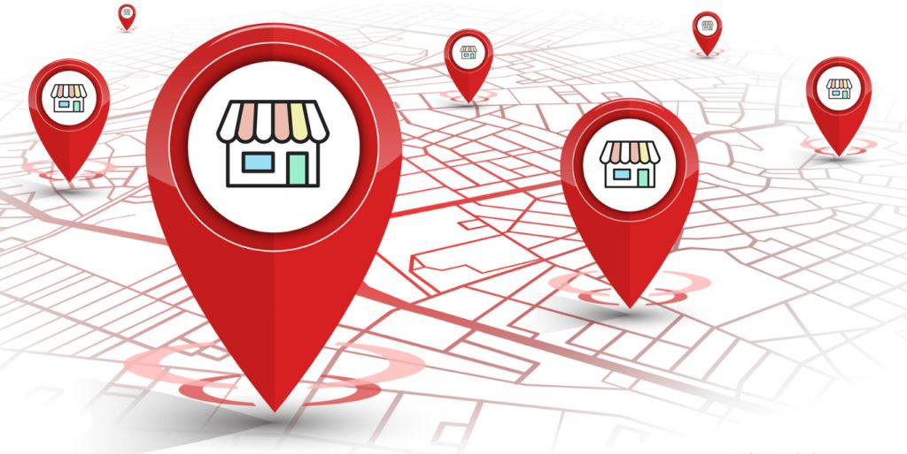
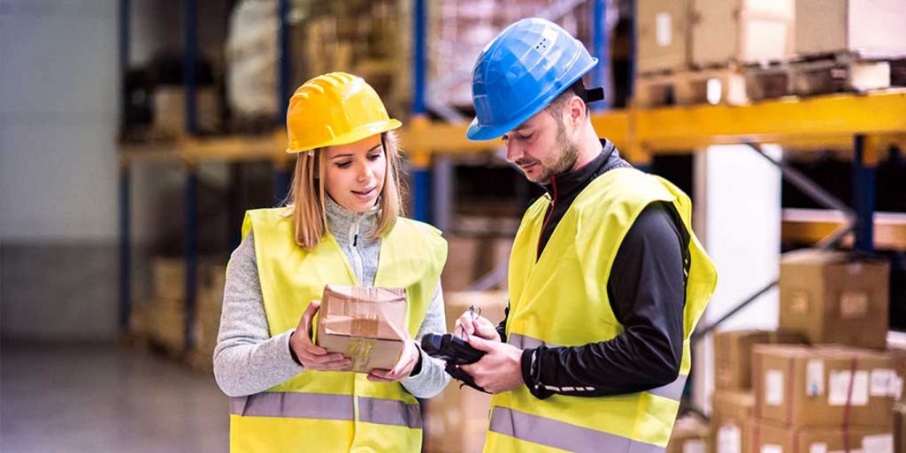
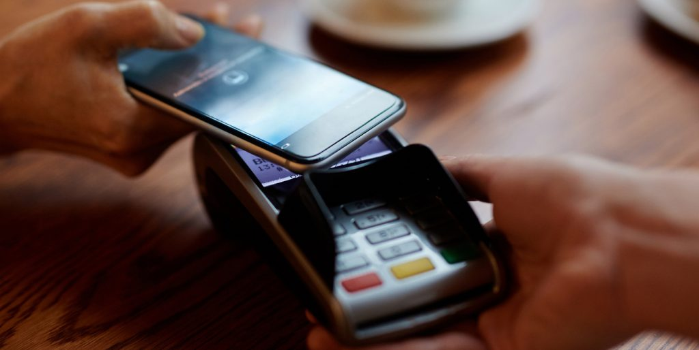
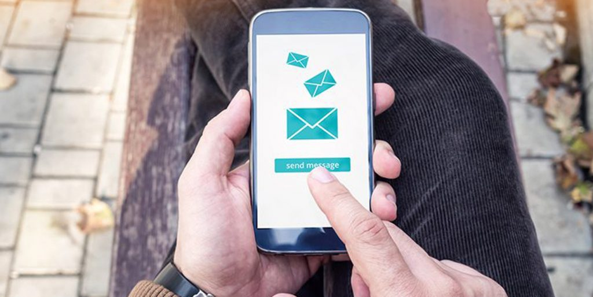

<?xml version="1.0" encoding="UTF-8"?><rss version="2.0"
	xmlns:content="http://purl.org/rss/1.0/modules/content/"
	xmlns:wfw="http://wellformedweb.org/CommentAPI/"
	xmlns:dc="http://purl.org/dc/elements/1.1/"
	xmlns:atom="http://www.w3.org/2005/Atom"
	xmlns:sy="http://purl.org/rss/1.0/modules/syndication/"
	xmlns:slash="http://purl.org/rss/1.0/modules/slash/"
	>

<channel>
	<title>Hike POS Software</title>
	<atom:link href="index.html" rel="self" type="application/rss+xml" />
	<link>http://hikeup.com/</link>
	<description></description>
	<lastBuildDate>Fri, 26 Mar 2021 06:09:14 +0000</lastBuildDate>
	<language>en</language>
	<sy:updatePeriod>
	hourly	</sy:updatePeriod>
	<sy:updateFrequency>
	1	</sy:updateFrequency>
	<generator>https://wordpress.org/?v=5.7.1</generator>

<image>
	<url>https://hikeup.com/wp-content/uploads/cropped-favicon-3-32x32.png</url>
	<title>Hike POS Software</title>
	<link>http://hikeup.com/</link>
	<width>32</width>
	<height>32</height>
</image> 
	<item>
		<title>Top Checkout Counter Ideas to Boost Your Retail Store</title>
		<link>https://hikeup.com/blog/top-checkout-counter-ideas-to-boost-your-retail-store/</link>
		
		<dc:creator><![CDATA[Hiren Savjiyani]]></dc:creator>
		<pubDate>Wed, 17 Feb 2021 13:23:50 +0000</pubDate>
				<category><![CDATA[Retail]]></category>
		<guid isPermaLink="false">https://hikeup.com/?p=52560</guid>

					<description><![CDATA[<p>When did you last consider the appearance or effectiveness of your retail store checkout counter? When retailers invest in their physical store, the checkout area is often one that is overlooked in favour of bright window displays and clear signage that draw people into the store instead. In fact, the checkout space is often considered&#8230; <a href="../../../top-checkout-counter-ideas-to-boost-your-retail-store/index.html" class="more-link">Read more</a></p>
<p>The post <a rel="nofollow" href="../../../top-checkout-counter-ideas-to-boost-your-retail-store/index.html">Top Checkout Counter Ideas to Boost Your Retail Store</a> appeared first on <a rel="nofollow" href="../../../../index.html">Hike POS Software</a>.</p>
]]></description>
										<content:encoded><![CDATA[
<p>When did you last consider the appearance <span id="more-52560"></span>or effectiveness of your retail store checkout counter? When retailers invest in their physical store, the checkout area is often one that is overlooked in favour of bright window displays and clear signage that draw people into the store instead. In fact, the checkout space is often considered to be mainly transactional and undeserving of the love and attention that gets lavished on the other areas of the store.</p>


<p>What many people fail to realise is that the checkout counter offers plenty of untapped potential. As the last point of contact between you and your customers, it is your last chance to capture any last-minute sales and your final opportunity to leave a lasting positive impression on your customers that gets them on board with your brand and likely to return again. Fortunately, there’s lots of things you can do to maximise the potential of your checkout counter. Here’s a few of our favourite ideas.</p>


<h2>Make the checkout experience a safe one</h2>


<p>Unsurprisingly, most consumers still have high levels of concern regarding their safety when shopping in store. While some <a href="https://www.theguardian.com/business/2020/jun/23/britons-local-food-shops-online-stores-covid-19-supermarket">studies</a> have shown that consumers generally feel safer visiting smaller, independent retailers than they do larger chain stores, all stores need to take on board the necessity of illustrating their commitment to preventing the spread of Covid-19 and other illnesses. If you want to ensure that your customers return, you need to do everything in your power to make them feel safe. One of the areas where they are potentially at greatest risk is in the queue and at your checkout counter. This is because it is here that they are most likely to be in close proximity to other shoppers and to your staff.</p>


<p>Fortunately, there’s a range of things that you can do to make the checkout process as safe as possible for both your customers and your sales team. Some of the these include:</p>


<p><strong>Installing plexiglass on the countertop to physically separate your sales team from your customers.</strong> Have a small area at countertop level through which they can pass products to be scanned and their payment method.</p>


<p><strong>Provide sanitizing options.</strong> As we know, clean hands are one of the best ways of stopping the spread of disease. Providing customers with a way to sanitize their hands in the queue and/or at the checkout point is essential, and as they enter your store, is a basic and inexpensive method of increasing your safety provision.</p>


<p><strong>Using outside space for queuing if possible.</strong> It is harder for viruses to transmit between patients in the open air. Therefore, if you have any outside space which can be used for queuing, you can utilize this for your customer’s safety.</p>


<p><strong>Use floor markers to specify safe distances.</strong> This will help customers know how far apart to stand.</p>


<p><strong>Don’t operate checkouts next to one another.</strong> If you have multiple checkouts, don’t open up those directly next door to one another. If you have no choice, consider putting safety screens between them to create a physical barrier between your customers.</p>


<p><strong>Make sure that your POS supports contactless payments.</strong> As we know, Covid-19 and other illnesses are easily transferred between people by contact, especially if the infected party hasn’t washed their hands properly. Over the last year, the number of people making contactless payment has risen, and contactless is being actively encouraged by many stores since they require no physical interaction with the payment terminal. <a href="https://www.twobirds.com/en/news/articles/2020/global/increase-of-contactless-payment-limits-in-order-to-slow-down-spread-of-covid-19">Many countries</a> have also taken action to promote contactless payments – a direct result of the dramatic shift in payment preferences made by consumers. One <a href="https://www.nfcw.com/2020/08/19/367471/visa-one-in-two-consumers-are-no-longer-willing-to-shop-at-stores-that-dont-offer-a-fully-contactless-payments-process/">study</a> even found that 48% of consumers said that they would not shop at a store that didn’t offer contactless payments.</p>


<p>However, some retailers are falling behind when it comes to their technology. If your POS and terminal don’t currently support contactless payments, now is the perfect time to upgrade them. Doing so will demonstrate to customers that your retail store is modern, listening to what customers want and dedicated to their convenience and safety, providing an enhanced customer experience. Check out how <a href="../../../../index.html">Hike</a> can support contactless payments and help you to grow your retail business.</p>


<h1>Encourage Impulse Buys</h1>


<p>The impulse buy is a powerful weapon to have in your sales arsenal. <a href="https://www.dacgroup.com/en-gb/blog/retail-therapy-and-the-power-of-the-impulse-buy/">Statistics</a> show that 88.6% of Americans have admitted to impulse shopping, making up to a whopping 156 impulse purchases each, every single year! If you want to get in on that action, you need to be encouraging your customers to snap up some of your products and one of the most effective ways to do this is by placing them near the checkout. One of the reasons for this is that when we spend time waiting at a checkout, we naturally look around us. By placing the right products at the checkout, it’s possible to capitalize on the compulsion to add just one more item to our purchases, without putting much thought into it.</p>


<h2>What products make great impulse buys?</h2>


<p>Some products are better impulse buys than others. Most customers aren’t going to impulsively spend $50 on something. However, things that only cost a few dollars are often picked up without much consideration, making them a great option to increase your sales income, and then hopefully profit, per customer.</p>


<p>Products that make great impulse buys usually fall into one of five categories. These are:</p>


<ul><li>Accessories for other products; think batteries, lighters, sticky tape etc.</li><li>Small, inexpensive items, such as candy and single snacks, socks, hair ties and gift cards.</li><li>Sample-sized or travel-sized versions of popular brands and products.</li><li>Amazing deals, such as value sets or deals based on multi-buys.</li><li>Seasonal items, like gift tags, holiday cards.</li></ul>


<p>Make sure you draw attention to your impulse buys through great lighting, signs and plenty of colour! And you can keep track of what’s successful and what’s not by using the inventory and reporting <a href="../../../../software-features/index.html">features</a> on your POS.</p>


<h2>Utilize the power of social media</h2>


<p>Social media has changed the way in which retail stores can market their products and interact with their customers. Shopping is a social activity, so it should come as no surprise that retailers can successfully use social media platforms to both boost awareness of their brand and increase sales. <a href="https://www.mckinsey.com/industries/technology-media-and-telecommunications/our-insights/the-social-economy">Studies</a> show that while around 72% of companies are now using social technologies in some way, very few are utilising them to their full potential. Unfortunately, this is believed to be because many retailers remain fixed in the mindset that social media is only a sales tool.</p>


<p>Actually, any retailers who intend on using social media must develop a content strategy that places the customer firmly at the centre of it. One of the best ways of doing this is by encouraging your customers to share their own images of your store and of course, of your products. Doing so can raise your profile, get more eyes on your products and secure more visits to your store. Creating your own hashtag will make it easy for you to keep track of which customers are getting involved and the checkout is a perfect opportunity to remind them of how they can find you on social channels too since you’ll have their attention, and they may have time to follow you while they queue. Create clear signs letting them know how to connect with your brand on your social media – Instagram is a particularly important one for showcasing products. You can even explore the option of creating a promotion that links to social sharing.</p>


<h2>Share your brand story</h2>


<p>When customers buy from your retail store, they aren’t just buying your products, they are also buying into your brand. Using your brand story as a part of your marketing strategy is a great way to connect with customers, gain their trust and loyalty, and keep them coming back time and time again. One of the main reasons for this is because emotions have been found to drive purchases more than logic. A great brand story can attract new customers, and retain them, without the need for excessive and expensive marketing.</p>


<p>Consumers today are much more aware of who they are buying from and want their purchase decisions to align with their personal values and identity. Your brand story is what you want your business to be remembered for. One of the ways in which to determine this is to think about what emotion you want to invoke in your customers when they think about you. Studies have shown that people can forget exactly what is said, but it is much harder to forget the way that the message makes them feel. You can use your story to create a deep, emotional connection with your customers – both in person and in the virtual world with your social media platforms.</p>


<p>What’s this got to do with your checkout counter? The space around your checkout is an ideal area in which to display evidence of your brand story. Waiting in line or the time it takes to pay gives your customer’s minds time to wander, and you can draw their attention with a very visual display of your brand story. &nbsp;One of the best examples of this is Lush, who have very clear messaging that is perfectly in line with their brand values above every checkout.</p>


<h2>Choose a POS system that enhances the appearance of your checkout and the checkout experience</h2>


<p>You may have invested in a beautifully designed cash wrap for your checkout counter, but this won’t mean a thing if you have a clunky, old-fashioned POS that doesn’t fit with your retail brand. Consumers seriously value the appearance and atmosphere created by stores, and showcasing a shiny, modern and space-saving POS shows that you are prepared to invest in providing the best equipment for their check out experience.</p>


<p>An increasing number of retailers are choosing POS systems that work on tablets or computer, rather than conventional cash registers. Not only do they look more appealing, but they offer you and your customers greater flexibility. You don’t necessarily even need to be tied to a counter, but instead your sales associates can move around the store if necessary, and if you have an ecommerce store and don’t necessarily have your full product range instore, using an iPad-based POS gives your customers the opportunity to digitally browse your catalogue online and potentially make further purchases.</p>


<p>Choosing a great POS can even improve the entire checkout experience. By choosing a cloud-based POS system, you can process payments online and offline, accept gift cards, provide loyalty points, see full customer profiles and send customer receipts by email. You can even see live inventory counts and take a range of payment methods, ensuring that the process is simple, smooth and provides your customers with the best possible experience.</p>


<p><a href="../../../../pos-hardware/index.html">Hike</a> has a range of retail POS hardware packages to choose from, including those that work with iPads and other type of computer, enabling you to choose the one that works best for your store and counter setup. Super-easy to install, it takes just a few minutes to get started with Hike POS.</p>


<p>If you want to show your checkout counter some love and would like to find out more about how Hike POS can help, please visit our website. Alternatively, <a href="https://my.hikeup.com/signup?_ga=2.137362104.909611889.1611764444-514662066.1611764444">sign up for your free trial</a> today.</p>
<p>The post <a rel="nofollow" href="../../../top-checkout-counter-ideas-to-boost-your-retail-store/index.html">Top Checkout Counter Ideas to Boost Your Retail Store</a> appeared first on <a rel="nofollow" href="../../../../index.html">Hike POS Software</a>.</p>
]]></content:encoded>
					
		
		
			</item>
		<item>
		<title>How to Make Your Retail Business More Environmentally and Socially Conscious</title>
		<link>https://hikeup.com/blog/how-to-make-your-retail-business-more-environmentally-and-socially-conscious/</link>
		
		<dc:creator><![CDATA[Hiren Savjiyani]]></dc:creator>
		<pubDate>Mon, 06 Jul 2020 07:00:07 +0000</pubDate>
				<category><![CDATA[Business]]></category>
		<category><![CDATA[Retail]]></category>
		<guid isPermaLink="false">https://hikeup.com/?p=48869</guid>

					<description><![CDATA[<p>Today, we are only ever the touch of a button away from the latest and most important information. Over the last decade, the news has made us even more aware of the impact that humans have on the planet. Humans affect the physical environment in many ways, and our actions have triggered a range of&#8230; <a href="../../../how-to-make-your-retail-business-more-environmentally-and-socially-conscious/index.html" class="more-link">Read more</a></p>
<p>The post <a rel="nofollow" href="../../../how-to-make-your-retail-business-more-environmentally-and-socially-conscious/index.html">How to Make Your Retail Business More Environmentally and Socially Conscious</a> appeared first on <a rel="nofollow" href="../../../../index.html">Hike POS Software</a>.</p>
]]></description>
										<content:encoded><![CDATA[
<p> Today, we are only ever the touch of a button away from the latest and most<span id="more-48869"></span> important information. Over the last decade, the news has made us even more aware of the impact that humans have on the planet. Humans affect the physical environment in many ways, and our actions have triggered a range of potentially devastating consequences – climate change, soil erosion, poor air quality, pollution and undrinkable water.  </p>


<p> One result of this increased awareness is that issues such as climate change and excess waste production as well as unethical labour practices and lack of diversity matter far more to people than they did a few decades ago. Furthermore, the majority of consumers are now actively making the choice to favour business that are actively aware of their environmental and social responsibilities and are taking steps to fulfil them. </p>


<p> A <a href="https://www.conecomm.com/research-blog/2017-csr-study">2017 study</a> carried out by Cone Communications found that: </p>


<p><strong>76%</strong> of consumers will refuse to purchase a company’s products or services if they discover that it supports an issue contrary to their personal beliefs.</p>


<p><strong>78%</strong> of consumers want companies to address important social justice issues.</p>


<p><strong>87%</strong> of consumers will purchase a product or service because the company selling it advocates for an issue that they personally care about.</p>


<p>While people feel that their own environmentally conscious decisions can make a big difference to the world, they also want the brands and businesses that they support to help them achieve this. <a href="https://www.wearefuterra.com/wp-content/uploads/2019/06/Futerra-Honest-Product-V5.pdf">A research study</a> conducted by Futerra in 2019 found that a whopping <strong>98%</strong> of people surveyed felt that brands have a responsibility to make positive change in the world. Here’s looking at you! </p>


<p>So, what can you do to make your small business more environmentally and socially conscious? </p>


<h2>Switch to sustainable packaging</h2>


<p>Most businesses need to use packaging in some way, whether it is to wrap goods that you sell in store, or to ship them to customers in your country or internationally. In the past, plastic was one of retailers preferred packaging materials owing to its durability, which makes it good at protecting products in transit. It is also very thin, which means it uses fewer resources and takes up less space for both storage and transport. Studies estimate that packaging accounts for <strong>40%</strong> of plastic usage. Unfortunately, currently only <strong>9% </strong>of the world’s plastic is recycled. Any that isn’t takes centuries to break down, but it never fully decomposes and instead wreaks havoc on our wildlife and ecosystems.</p>


<p>While no packaging or reusable packaging is ideal, if you need to use some, paper and cardboard are considered the most environmentally friendly due to the fact that the vast majority can be recycled. Some initiatives that you could try in your retail store include:</p>


<ul><li>Incentives for customers
bringing their own reusable bags or packaging. This could be in the form of a
discount or loyalty points.&nbsp; </li></ul>


<ul><li>Use recycled materials in your
own packaging wherever you can. </li></ul>


<ul><li>Consider multipurpose
packaging. For example, clothing retailer H&amp;M have bought out a <a href="https://www.behance.net/gallery/18587077/H-M-Sustainable-Retail-Packaging">shopping
bag that turns into a clothes hanger</a> – yes really! You can also add extra value
to the packaging by making the box you use reusable itself. British retailer of
clothes for young girls, Monday’s Child, has created an
environmentally-conscious <a href="https://packhelp.co.uk/sustainable-packaging/">box that doubles as a
doll’s house</a>!</li></ul>


<p>It is also worth considering which suppliers you use and if they use recyclable packaging when they ship products to you. If you really want to ramp up your environmental awareness, you could see if there are alternative suppliers which practice more socially conscious practises without affecting your bottom line. </p>


<p><a href="https://news.mcdonalds.com/news-releases/news-release-details/2025-all-mcdonalds-packaging-come-renewable-recycled-or-0">McDonald’s</a> has pledged to ensure that all of its packaging will be 100% renewable and recycled by 2025 which is some serious commitment. And sustainable packaging won’t just lower your environmental impact and make your customers happy, it will also set your business apart from your competitors. Many retailers are using stickers and postcards enclosed with their packaging to explain their commitment to more sustainable practices. Make sure you also use your mailing list, website and social media channels to communicate what you are doing and why.</p>


<h2>Make it easier for your customers to lower their environmental footprint</h2>


<p>As we know, consumers want the support of brands in lowering their own personal environmental impact. As such, helping your customers to offset the effects of their own retail habits will not only make them more likely to shop with you, but it will also boost your own sustainability efforts. Exactly how you can do this will depend on the type of retailer you are and the products and/or services that you offer. For example:</p>


<p>If you are an electronics retailer, you could collaborate with a local recycling partner to encourage customers coming to your store to bring their old printer cartridges or mobile phones in, offering a purchasing initiative to do so. Retail giant <a href="https://www.apple.com/shop/trade-in">Apple</a> don’t only offer in-store recycling &#8211; it is also possible for customers to ship electronics to them for recycling for free. If your device still has value, you will be able to trade it in for credit towards your next purchase or receive a gift card for future use. Similarly, Staples has created a program that allows customers to earn $2 in rewards for every ink cartridge that they recycle in store or by mail when they spend at least $30 on ink or toner. </p>


<p>If you have a café or other food or beverage outlet that offers takeaway, you can show your commitment to a sustainable future by supporting and incentivising the use of reusable drinking vessels. Most single use coffee cups are non-recyclable, and estimates suggest it can take 50 years for them to fully break down when in landfill. When there is around 2.5 <em>billion</em> of them thrown away every year, that is a <strong>lot</strong> of unnecessary waste. Lots of independent and chain cafes are giving discounts and rewards to eco-conscious consumers who take their own reusable cup. In the UK, <a href="https://www.pret.co.uk/en-GB/sustainability">Pret A Manger</a> offer customers a 50p discount off their drink of choice when it is supplied in a reusable cup. In addition to this, they are also committed to reducing food waste by donating all of their unsold food to charities at the end of the day through <a href="https://www.pret.co.uk/en-GB/pret-foundation">The Pret Foundation</a>. </p>


<h2>Support a non-profit organisation</h2>


<p> Is there a cause that is close to the heart of your retail business or the employees who work for you? Research from the <a href="http://ppqty.com/2010_Cone_Study.pdf">Cone Cause Evolution Study</a> reveals that <strong>85%</strong> of consumers have a more positive image of a product or company when it supports a charity that they care about, with as many as <strong>80%</strong> of people surveyed stating that they would switch to buying from a company that supports a charity provided the product or service was equal in quality and price. This doesn’t have to be a large non-profit organisation. In fact, local charities where your consumers can often see first-hand exactly how any donations are being spent are largely preferred to larger, well-known non-profits. </p>


<p>It’s important to remember that your charity efforts should ideally resonate with your target audience, so do your research before committing to a cause. This will help to get their attention, and gain their trust, loyalty and respect. Instead of just writing a check for your chosen charity each financial quarter, try and be creative with how you offer support. </p>


<p>Shoe retailer TOMS began life as a One for One company, giving away a pair of shoes to people in need for every pair purchased online or instore and to date, they have given away almost 100 million shoes. They are now diversifying their commitment to remaining socially conscious by dedicating one third of their net annual profits to a range of charitable organisations including mental health, equal opportunities and, from April 1<sup>st</sup>, 2020, a COVID-19 giving fund.&nbsp; </p>


<p>Meanwhile, <a href="https://www.facebook.com/watch/?v=1481198555316483">Petco</a> chose to donate pet toys to a number of animal shelters as part of their Tuesday Giving efforts and UK retailer John Lewis provide their staff with an opportunity to volunteer for up to six months, on full pay and benefits, through their flagship volunteering programme, The Golden Jubilee Trust. Since it was created in 2000, the trust has facilitated the donation of over 393,000 volunteer hours to charitable causes, representing a community value of over £25 million. As a small or medium-sized business, you could arrange for all staff to volunteer for a day at a local charity</p>


<h2>Promote ethical labour practises</h2>


<p>When you think about social responsibility, charity donations and volunteering tend to be some of the first things that you consider. However, social consciousness begins at home – or in this case – in your retail store. One of the first things that any retailer who wants to be socially conscious should so is to make sure that they are following ethical labour practises within their own business. This means:</p>


<ul><li> A work environment that is safe and healthy </li><li>Providing employees with fair compensation for their work</li><li>Hiring employees using a fair recruitment process that doesn’t discriminate based on age, sex, race, colour, sexual orientation, religion etc</li><li>Enabling growth opportunities within your company</li><li>Valuing your team and their work</li><li> Treating all members of staff equally, with respect and dignity </li></ul>


<p>Not only do ethical labour practices show that as an employer, you care about your staff and are committed to ensuring fair compensation for work, but ethical behaviours also create a happy workforce which in turn ensures maximum productivity from your team. </p>


<h2>Embrace inclusion and diversity</h2>


<p>Retailers can expect better performance when they offer products, services and experiences that reflect what shoppers want and value. Unsurprisingly, one of the key things that consumers want is to feel valued for who they are. As a result, inclusion and diversity are extremely important to the success of any business. A study by <a href="https://www.accenture.com/gb-en/insights/retail/inclusion-diversity-retail">Accenture</a> found that shoppers are not only turning away from brands that don’t share their values, they are also turning towards those which celebrate diversity and promote inclusion. Their research showed:</p>


<p><strong>42%</strong> of ethnic minority shoppers would switch to a retailer committed to inclusion and diversity.</p>


<p><strong>41%</strong> of LGBT shoppers would switch to a retailer committed to inclusion and diversity.</p>


<p>There are a range of ways in which you can ensure a more inclusive shopping experience for your customers. Your </p>


<p><strong>Your products:</strong> Choose products that address the diverse needs of your customers. For example, if you are a retailer selling wedding gifts, be sure to stock those that are for Mr &amp; Mr and Mrs &amp; Mrs, as well as Mr &amp; Mrs. </p>


<p><strong>Inclusive advertising:</strong> If you are advertising your retail business, make sure that these reflect the diversity of consumers and are inclusive to all types of people. For example, you could produce certain aspects of flyers in Braille, produce window displays with mannequins in a variety of skin tones or sizes like <a href="https://www.independent.co.uk/life-style/nike-plus-size-mannequin-london-store-niketown-a8946196.html">Nike</a> who now use plus-size mannequins too, or if your store is in an area with a large community speaking a different language, produce advertising in this language as well as your native tongue. </p>


<p><strong>Your workforce:</strong> Don’t forget to teach your staff the important of inclusion and diversity by incorporating training into your recruitment and onboarding process. This will ensure that new team members will understand your expectations from the very beginning. Earlier this year, Sephora closed 400 stores across the United States for diversity and inclusion training. </p>


<h2>Go paperless</h2>


<p> Although perhaps not as much as a conventional office, many retailers still go through a considerable amount of paper every day. Some of the ways in which you may be using paper unconsciously include: </p>


<ul><li>Notebooks or purchase order pads for taking orders</li><li>Invoices</li><li>Receipts </li><li>Reports</li><li>Inventory lists</li><li>Rotas </li></ul>


<p>A great cloud-based point of sale system like <a href="../../../../gb/index.html">Hike</a> can help retailers to reduce the amount of paper that they use and streamline their processes so that they aren’t reliant on paperwork which could be illegible or become lost or damaged. </p>


<p>There are a range of paperless functions that Hike can support your business with:</p>


<ul><li>Full or partial stock-takes with inventory entered directly onto your POS via your iPad/tablet.</li><li>Store customer purchase history for both in-store and online purchases in one centralised system. </li><li>Safe, secure cloud-based storage of customer details.</li><li>Track loyalty points, gift card balances and more.</li><li>Accounting integrations that enable you to track suppliers and customers in one system.</li><li>Email invoices directly to customers complete with your company’s personal branding.</li><li>Email communications directly to customers.</li><li>Send receipts to customers via email, so that they don’t lose them, and you don’t need to use paper and ink to print them. </li><li>Set up staff rotas online.</li></ul>


<p>Reducing your paper usage will help keep your store uncluttered and simplify your processes so that you can continue to meet customer expectations and show that you are a forward-thinking, environmentally-conscious business.&nbsp;&nbsp; </p>


<p>Cloud-based POS systems like <a href="../../../../index.html">Hike</a> can help your retail business to find ways to become more environmentally and socially conscious, whether it is by making important decisions about the resources you use or the donations you make, or helping you save paper. For your non-obligation 14 day trial, please <a href="https://my.hikeup.com/signup?_ga=2.31725050.553149863.1593708877-760964111.1593708877">get in touch</a>!</p>
<p>The post <a rel="nofollow" href="../../../how-to-make-your-retail-business-more-environmentally-and-socially-conscious/index.html">How to Make Your Retail Business More Environmentally and Socially Conscious</a> appeared first on <a rel="nofollow" href="../../../../index.html">Hike POS Software</a>.</p>
]]></content:encoded>
					
		
		
			</item>
		<item>
		<title>How to Apply Social Distancing to Your Retail Store?</title>
		<link>https://hikeup.com/blog/how-to-apply-social-distancing-to-your-retail-store/</link>
		
		<dc:creator><![CDATA[Hiren Savjiyani]]></dc:creator>
		<pubDate>Thu, 21 May 2020 12:44:37 +0000</pubDate>
				<category><![CDATA[Retail]]></category>
		<guid isPermaLink="false">https://hikeup.com/?p=48554</guid>

					<description><![CDATA[<p>There is no getting away from the fact that social distancing is going to be around for quite some time. Also known as physical distancing, this technique refers to keeping space between yourself and other people when outside your home, and it has become one of the key underlying pieces of guidance during the Covid-19&#8230; <a href="../../../how-to-apply-social-distancing-to-your-retail-store/index.html" class="more-link">Read more</a></p>
<p>The post <a rel="nofollow" href="../../../how-to-apply-social-distancing-to-your-retail-store/index.html">How to Apply Social Distancing to Your Retail Store?</a> appeared first on <a rel="nofollow" href="../../../../index.html">Hike POS Software</a>.</p>
]]></description>
										<content:encoded><![CDATA[
<p> There is no getting away from the fact that social distancing is going to be around<span id="more-48554"></span> for quite some time. Also known as physical distancing, this technique refers to keeping space between yourself and other people when outside your home, and it has become one of the key underlying pieces of guidance during the Covid-19 pandemic. This is because social distancing has been proven to be effective at helping to prevent the spread of viruses in the general population. </p>


<p> The current guidance is that people should stay at least 1.5m away from another, and ideally 2m apart in enclosed spaces such as shops. However, as you might expect, actually adhering to the recommended social distance isn’t always easy – <em>especially</em> when indoors where there are likely to be other people from outside your household. </p>


<p>If you are a retailer, you may be concerned about how you can encourage back to your retail store so that they can continue to enjoy shopping with you, but also maintaining social distance, both for their safety and that of your staff. And let’s face it, unless customers feel confident that you are adhering to social distancing guidelines, they may want to stay away entirely. </p>


<p> So, how can you apply social distancing to your store without negatively impacting on customer experience? Here’s our advice for practical steps that you can take that will enable you to open and operate safely while still delivering quality customer service every time. </p>


<h2>Think health</h2>


<p>Unsurprisingly, one of the first things that you should think about is the health of your team and your customers who are actually working in or visiting your store. Applying social distancing is all very well, but if there is someone who is actually unwell in your store, there is still an additional degree of risk. </p>


<p>Protect your staff and your customers by reminding your team that they should only come into work if everyone in their household is well and nobody is self-isolating. You may also like to get in touch with your customers (more on that later) to ask them to stay at home should they or someone in their household be unwell. Many stores are placing reminders to this effect in store windows to try and minimize the likelihood of any sick customers visiting them. Make sure that your team are able to wash their hands as regularly as they feel that they need to, and if you are using PPE, that you have the necessary supplies at all times. </p>


<h2>Limiting the number of people who enter your store</h2>


<p>It is strongly advised that all retailers limit the number of people who enter their store while social distancing is being enforced. This will help to ensure that are not too many people in a small space, making social distancing much easier to maintain. How many people you should allow into your retail store will depend on a number of different factors but will be primarily based on the overall square footage of your premises. </p>


<p>The current recommendations are that there is no more than a single person per 4 square metres of floor space. To determine the maximum number of people you should have in your store at any one time, you should figure out the area of the customer area (length x width) and then divide this answer by 4. For example, a retail store that has an area of 160sqm can have a maximum occupancy of 40 people in the customer area. However, you will also need to deduct from this number any staff that you have. If you have 5 staff also working in this area, then you should impose a maximum limit of 35 customers at any one time. But, is 35 customers really practical? Or safe? Retailers will need to think extremely carefully about the layouts of their stores in order to determine how their customers can safely and practically move around the store at any one time. This is particularly true when it comes to queueing. </p>


<p>Unfortunately, it will be down to your staff to police the number of people entering your store and how they do this. Once you reach what you consider to be a safe and practical capacity, a ‘one in and one out’ approach seems to be the easiest way to maintain safe numbers and adequate social distancing. </p>


<h2>Safe queueing and social distancing</h2>


<p>Queues tend to be the part of a retail store where people come into the closest contact, particularly if the queuing is taking some time as may be the case when you are taking extra safety precautions in your retail store. Enabling customers to remain a safe distance from one another is crucial and so you will need to implement a system to make this possible. The easiest way to do this it to mark out queuing spots at set distances apart so far as is practical. For some sites, it may only be possible to mark out 2 spaces, while for others, a longer queue may be a possibility. </p>


<h2>Taking payments in store</h2>


<p>One of the main times in which your staff are likely to come into contact with customers is during the checkout process. Most stores now offer multiple ways to pay, with contactless card payments being particularly valuable at the moment. Encouraging your customers to pay in this way wherever possible will limit the amount of cash that your staff and customers are transferring between them, which in turn reduces the risk of passing any harmful bacteria and makes transactions much safer. Going contactless also means that your customers won’t need to use pin pads, which would otherwise need to be thoroughly cleaned between each transaction to ensure maximum safety. </p>


<p>If it is feasible, you may want to put up plexiglass barriers at any regular points of interaction, such as checkouts or collection points. This will provide an additional degree of protection and give your customers peace of mind that you are considering their safety. If you have a point of sale system that enables you to, such as <a href="../../../../index.html">Hike</a>, offer your customers the option of a receipt that is emailed directly to them to limit contact even more. You may also be able to get their permission to use their email address in future marketing efforts.</p>


<p> Remember, you want your customers to feel safe and comfortable when visiting your store and it is your queuing system and their interactions with staff that is most likely to affect this, closely followed by your entry and exit points. If your customers are happy with your queuing system, they are more likely to visit again.  </p>


<h2>Consider your entry and exit points</h2>


<p>Entry and exit points to stores can always become bottlenecks, especially when it is busy and particularly when you consider that most entryways are not necessarily 2m wide to allow safe distance. This means that in order to maintain social distancing and keep your customers and staff safe, you will need to think about how you will enable customers to enter and leave your store. If you have two access points, it may be simple enough to turn one into an ‘entrance only’ while reserving the other for customers who are leaving. However, if you only have a single entrance, you may have to be more creative when it comes to planning how your customers will visit you safely. </p>


<p>Contact-free entry is the most ideal solution. This is great if you already have automatic doors to your store, but if this isn’t the case, you may need to consider what you can do to ensure that entry requires minimal contact with any surface. This may mean propping doors permanently open and using the staff member at the entrance to control the flow of customers. </p>


<h2>Encourage customers to order online</h2>


<p>Of course, if you have an online store you can offer your customers the opportunity to avoid having to come into store altogether without having to miss out on your products. An increasing number of businesses have come online in the last decade, and the recent Covid-19 pandemic has shown many retail stores just how vital it is to have the capability of selling online direct to their customers at any time of the day or night. </p>


<p>Getting started with an online retail store is now easier than ever before. You can choose to sell your products on a Marketplace such as Amazon or eBay or set up a store with a provider like Shopify. Great point of sale systems can even integrate with online stores for you, enabling you to start selling over the internet virtually instantly. For example, <a href="../../../../index.html">Hike</a> will instantly sync your inventory products with Shopify and centralize all of your orders in real time so that you remain in complete control of your product management, whether you are selling instore, online or both. </p>


<p><a href="../../../../index.html">Hike POS</a> offers integrations with multiple selling platforms, including Shopify, BigCommerce and WooCommerce.</p>


<h2>Delivery/collection options</h2>


<p> If you are selling online, your customers will appreciate a choice of options when it comes to how they will receive their products, particularly if they are self-isolating or have concerns about coming into contact with other people despite your social distancing measures. Many stores have started to offer free in-store collections that adhere to social distancing guidelines which enable customers to get in and out quickly and with minimal contact with others. You can set specific times to ensure that you don’t have too many customers collecting at the same time. If necessary, you can implement a social distance queuing system to help with the collection process. If customers are paying on collection, encourage contactless and offer e-receipts if you have a POS that supports this.  </p>


<p>Social distancing will also play a key role in any deliveries that you are offering. Whether you use a delivery company to carry out your deliveries on your behalf or you have staff fulfilling this service, you’ll need to make sure that they are adhering to all government recommendations for social distancing, such as contact-free drop-offs where they maintain a safe distance from the door while the customer retrieves the goods from their doorstep. This will also give your customers peace of mind when it comes to receiving goods from you. You should also advise your drivers to wash their hands or use sanitizer between every delivery to keep themselves as safe as possible. </p>


<h2>Make your customers aware of what your social distancing measures are</h2>


<p>Unsurprisingly, your customers will almost certainly want to know what social distancing measures your retail store has put in place before they will even consider visiting. This is where it is extremely helpful to have a full-service point of sale system, like <a href="../../../../index.html">Hike</a>, that stores valuable information about your customers – including their home or email addresses. This will enable you to get in contact with them and keep them up to date with the changes that you are making to your operations that are beneficial to their safety. </p>


<p>In addition to contact them directly, if you already use social media channels, these provide the perfect way to give real-time updates to your customers about the situation at your retail store, such as if you need to close early for any reason or if you have adjusted your social distancing measures and want to let customers know before they arrive. </p>


<p>Finally, it doesn’t hurt to give your customers helpful prompts when they enter or travel around your bricks and mortar store. Signs in the windows advising customers on social distancing measures, reminding them to keep 2 metres apart or follow a set route around the store are also beneficial. You may want to include signs at the checkouts to ask customers to pay using contactless wherever possible too. Many stores are even adding auto-dispensing bottles of sanitizer to entrances, exits and pay stations to minimize risk and keep their customers and staff safe. </p>


<p>With social distancing set to change the retail landscape for months or even years to come, your store’s adaptability to these new measures will be crucial to its success. An all-in-one retail platform like <a href="../../../../index.html">Hike</a> can help. To find out more, or to schedule your free, no-obligation trial, please get in touch. </p>
<p>The post <a rel="nofollow" href="../../../how-to-apply-social-distancing-to-your-retail-store/index.html">How to Apply Social Distancing to Your Retail Store?</a> appeared first on <a rel="nofollow" href="../../../../index.html">Hike POS Software</a>.</p>
]]></content:encoded>
					
		
		
			</item>
		<item>
		<title>Future-Proofing Your Retail Business for a Post-Pandemic World</title>
		<link>https://hikeup.com/blog/future-proofing-your-retail-business-for-a-post-pandemic-world/</link>
		
		<dc:creator><![CDATA[Hiren Savjiyani]]></dc:creator>
		<pubDate>Fri, 17 Apr 2020 14:08:07 +0000</pubDate>
				<category><![CDATA[Business]]></category>
		<category><![CDATA[Retail]]></category>
		<guid isPermaLink="false">https://hikeup.com/?p=48205</guid>

					<description><![CDATA[<p>Let’s face it, no retail business could have possibly prepared for the scale of disruption that the current global pandemic of Covid-19 has caused. However, it isn’t only pandemics that can trigger such immense disruption to our usual way of life. Natural disasters, political misadventures, war and economic catastrophes can all have a negative impact&#8230; <a href="../../../future-proofing-your-retail-business-for-a-post-pandemic-world/index.html" class="more-link">Read more</a></p>
<p>The post <a rel="nofollow" href="../../../future-proofing-your-retail-business-for-a-post-pandemic-world/index.html">Future-Proofing Your Retail Business for a Post-Pandemic World</a> appeared first on <a rel="nofollow" href="../../../../index.html">Hike POS Software</a>.</p>
]]></description>
										<content:encoded><![CDATA[
<p>Let’s face it, no retail business could have possibly <span id="more-48205"></span>prepared for the scale of disruption that the current global pandemic of Covid-19 has caused. However, it isn’t only pandemics that can trigger such immense disruption to our usual way of life. Natural disasters, political misadventures, war and economic catastrophes can all have a negative impact on the way in which we make a living, sometimes putting them under immense strain to cope. &nbsp;</p>


<p>Nevertheless, there are lessons that retailers can learn to ensure that they can bounce back following this crisis and are resilient enough to survive should another unprecedented event such as this ever occur again in the future. There is no time like the present to think about future-proofing your retail business for the new world that awaits us. Here are some of the key areas in which you can prepare.  </p>


<h2 class="has-text-color even-cl" style="color:#35bdb9">Multiple Sales Channels</h2>


<p class="even-cl">If Covid-19 has taught retailers one thing it is that for them to be successful in challenging times, they need to embrace more than a single sales channel. Those businesses that have continued to trade, despite the restrictions on stores opening their doors, have been those who have been able to continue selling online. They may have already had an online presence, quickly adapted their own website or used one of the many selling platforms available online to ensure that they could continue to serve their customers. </p>


<p class="even-cl">Getting your business online is more important than ever. An increasing number of people now shop using the internet, and in 2020, ecommerce sales are expected to account for more than 15% of retail sales worldwide. There are various reasons for this. The most significant is that it gives customers the ability to make purchases at all hours of the day and night. However, as this global pandemic has shown, an ecommerce store has also made it possible for customers to continue to access the products and services of many retail businesses during this unprecedented time. For many, this has been a lifeline in terms of obtaining essential supplies to keep them safe and healthy. </p>


<div class="wp-block-image even-cl"><figure class="aligncenter size-large"></figure></div>


<p class="even-cl">Fortunately, getting started with your own ecommerce store is easier than ever, especially if you have one of the latest Point of Sale (POS) systems. <a href="../../../../software-features/add-ons/index.html">Hike</a> integrates with both Shopify and BigCommerce, two of the best ecommerce platforms available. Using these, it is simple to set up your online store. Both are cloud-based, SaaS shopping cart solutions where paying a monthly fee gives you access to an admin panel where you can enter store data, add products and process orders. Better still, you can customize your design to suit your business identity. Setting up Hike’s integrations with these platforms takes just minutes, meaning you can get cracking with your online store and start selling extremely quickly – something which is important in a rapidly changing retail landscape such as that which we have seen during this pandemic. </p>


<h2 class="has-text-color" style="color:#35bdb9">Inventory and Stock Control</h2>


<p>You can’t sell what you don’t have available and it is this fact that makes managing your inventory so crucial at any time, but particularly when you are limited as to which channels of sale and distribution you can use. If you have products to sell that you know will be in particularly high demand, it is even more important to ensure that you have the necessary stock to fulfil any online orders so that you don’t end up letting your customers down. This could lead to high levels of dissatisfaction and affect your business reputation as well as jeopardizing future orders. </p>


<figure class="wp-block-image size-large"></figure>


<p>Fortunately, having a great POS can make all of your inventory worries go away. With a full-service POS like Hike, it is easy to keep track of the products that you have. Uploading your products and their variants is easy and can be changed at the touch of a button to reflect any new stock items or eliminated lines. When you then use your POS to sell, whether in store or online, each time a transaction completed your inventory will be automatically updated everywhere, keeping you in total control of your stock levels wherever you are and however purchases are made. You can even set reminders when stock levels are low to remind you to obtain more through the supply chain. All this means is that you can be there to serve your customers day to day and in an unprecedented time, when they need you most. </p>


<h2 class="has-text-color" style="color:#35bdb9">Real Time Reporting</h2>


<p>Real time reporting enables retailers to make smarter, faster business decisions which is particularly important if we enter another time in the future where the retail landscape makes a sudden shift. Therefore, it makes sense to choose a POS system that offers retailers the opportunity to view and analyze their data in a myriad of ways and at the touch of a button from anywhere in the world. </p>


<figure class="wp-block-image size-large"></figure>


<p>Comprehensive analytics make it possible for retailers to see which of their products are performing well, how their inventory is moving and which platforms customers are using to make their purchases. Is there a particular product that is suddenly selling very quickly? If so, identifying it through reporting could enable you to restock it and fulfil customer demand, whilst also taking advantage of the increased sales to boost your business at an uncertain time. And to make sure that you can react quickly to sudden changes in sales patterns, you can even set monitoring triggers for particular scenarios that will instantly notify you should they occur. </p>


<h2 class="has-text-color" style="color:#35bdb9">Contactless Payments</h2>


<p>The Covid-19 pandemic and the requirement for social distancing has meant that the way in which many retailers process their transactions has also needed to change. Whilst many businesses already accept other types of payments, the need for contactless transactions has meant that even more consumers have moved away from using cash as their primary way to pay. </p>


<p>Payment preference is important at any time. Some customers like to put all of their monthly purchases onto their credit card and pay it off at a time that suits them, rather than using available funds. Others prefer to pay via Paypal or Apple Pay or use gift cards or store credit that they may have accumulated via loyalty points. You can maximize on potential sales opportunities by giving your customers a range of payment options both online and instore. </p>


<figure class="wp-block-image size-large"></figure>


<p>Again, this is where choosing the right POS is invaluable. Many, like Hike, integrate with a number of payment providers globally, making it easier than ever to process payments wherever the sale is taking place. Other payment types that can be supported on POS systems include cheque, loyalty points, split payments, store credit, gift cards and even layaway or BNPL (Buy Now Pay Later). Enabling customers to pay using store credit, loyalty points and BNPL can be particularly beneficial in times of economic crisis, helping them to obtain the products that they need without risk to your business. </p>


<p>In addition, most POS systems will allow retailers to send receipts for purchases made in store via email. All the customer needs to do is to give you their email address at the point of purchase (unless you have this as part of your loyalty scheme already). This is another valuable way in which you can minimize contact and ensure that the customer can still receive proof of their purchase with you. </p>


<h2 class="has-text-color" style="color:#35bdb9">Keeping Customers Informed</h2>


<p>There is absolutely no point still trading in a time of crisis if no one knows that you are doing so. Keeping your customers informed with what is happening with your retail business is crucial – both to enable them to still make purchases and to show them that you value their custom. If you are still trading from your bricks and mortar store, you can advise customers of the practices that you are putting in place to ensure that they can shop safely and comfortably. This could include information about different opening times, how you will be taking payments, any rules on things like social distancing or other changes to your usual mode of operation. If you are only operating online, you can still contact your customers to let them know that this is how you are trading at the time and what to expect from your service. </p>


<figure class="wp-block-image size-large"></figure>


<p>And as we know, there are lots of effective ways at keeping in contact with customers. If you operate a loyalty scheme, you should have customer details logged on your POS which you can then use, alongside integrations such as Mailchimp, to send emails to them to keep them up to date with the latest developments of your business. In addition to contacting your customers directly, you can also use social media and updates to your website to keep them informed. Social media channels, such as Instagram and Facebook, are particularly useful for providing quick updates and announcing any sudden changes to your usual method of practice – for example, suddenly changing your opening hours or moving over to online-only sales. This is crucial for keeping customers happy and aware of how you can continue to support them through changing times. </p>


<h2 class="has-text-color" style="color:#35bdb9">Putting operational plans in place</h2>


<p>In the event that a similar-scale experience to the current pandemic happens in the future, you should use this time to put plans in place for how you are going to stay operational. You should make figuring out some alternative operating procedures a priority so that your business is ready to react quickly if it needs to. This will help to reduce confusion and wasted time deciding what needs to be done and enables you to proactively react to the changing situation. For example:</p>


<figure class="wp-block-image size-large"></figure>


<ul><li>Determine how you will continue to operate in different circumstances – opening times, staffing, rotas, chain of supervision, what you can and will sell and what forms of payment you will accept.</li><li>Consider the health and safety of your workforce and customers above all else, and how you will protect this.</li><li>Have a plan in place for how you will communicate changes with your customers.</li><li>If you don’t already, try and obtain customer information so that you can contact them directly if you need to in the future.</li><li>Set up an ecommerce store or have the right POS in place so that you can integrate one quickly if you need to.</li><li>Determine who you will use to fulfil deliveries and have a back-up option in place.</li><li>Get your business on social media.</li><li>Be sure to obtain your information about any legal or health and safety requirements you must meet from reliable sources. </li><li> Ensure your employees are properly trained on what will happen and how they will need to operate and refresh this training annually.   </li></ul>


<h2 class="has-text-color" style="color:#35bdb9"> Upgrading your POS to future-proof your store </h2>


<p> It’s clear to see that having a great Point of Sale system is integral to the success of a retail business at any time, but particularly during times of uncertainty and crisis when the viability of any store relies on its ability to quickly adapt to change. A great POS provides retail owners with total control over the key elements of their business at the touch of a button and from anywhere in the world. Being unable to be physically present is no longer a barrier to managing your store, continuing to trade or navigating successfully through tough times when you choose a cloud-based system that has everything that you need to run and grow your business. </p>


<figure class="wp-block-image size-large"></figure>


<p>If you haven’t yet upgraded your POS to one with all of the capabilities needed to keep the finger on the pulse of your retail business, contact <a href="../../../../index.html">Hike</a> today to schedule a free trial of our all-in-one retail platform. </p>


<p>There is no doubt that the shockwaves of the Covid-19 pandemic will continue to reverberate throughout the retail industry long after the virus has been eradicated. Future-proofing your retail business will help to ensure that you remain as resilient as you can in a post-pandemic world. </p>
<p>The post <a rel="nofollow" href="../../../future-proofing-your-retail-business-for-a-post-pandemic-world/index.html">Future-Proofing Your Retail Business for a Post-Pandemic World</a> appeared first on <a rel="nofollow" href="../../../../index.html">Hike POS Software</a>.</p>
]]></content:encoded>
					
		
		
			</item>
		<item>
		<title>Trending Products That Retailers Should Consider Selling in 2020</title>
		<link>https://hikeup.com/blog/trending-products-that-retailers-should-consider-selling-in-2020/</link>
		
		<dc:creator><![CDATA[Hiren Savjiyani]]></dc:creator>
		<pubDate>Fri, 13 Mar 2020 08:59:45 +0000</pubDate>
				<category><![CDATA[Retail]]></category>
		<guid isPermaLink="false">https://hikeup.com/?p=47927</guid>

					<description><![CDATA[<p>Every retailer knows that understanding what to sell is absolutely essential for the success of their business. Stocking the wrong items could end up with you spending out on inventory that is impossible to shift, whereas having your finger on the pulse of trending products or services could see you raking in the profits time&#8230; <a href="../../../trending-products-that-retailers-should-consider-selling-in-2020/index.html" class="more-link">Read more</a></p>
<p>The post <a rel="nofollow" href="../../../trending-products-that-retailers-should-consider-selling-in-2020/index.html">Trending Products That Retailers Should Consider Selling in 2020</a> appeared first on <a rel="nofollow" href="../../../../index.html">Hike POS Software</a>.</p>
]]></description>
										<content:encoded><![CDATA[
<p> Every retailer knows that understanding what to sell is absolutely essential for the success<span id="more-47927"></span> of their business. Stocking the wrong items could end up with you spending out on inventory that is impossible to shift, whereas having your finger on the pulse of trending products or services could see you raking in the profits time and time again. Whether you choose to only sell a product or service in a specific popular niche, or your retail outlet has a wider and more general range of goods but you want to be sure to offer the hot products of the moment, we want you to have your greatest year yet. To help you do that, here are the trending products and services that retailers should consider selling in 2020. </p>


<h2>Hair – Trending Products of 2020</h2>


<p> Hair! Most of us have it in some way shape or form. Whether it is the hair on our heads or our bodies, the way we style it or getting rid of it, there’s no getting away from the popularity of products relating to it. Here’s some of the key trending products and services in this industry for 2020.  </p>


<h3>Laser Hair Removal</h3>


<p>Unwanted body hair is a significant problem for a wide range of people, and particularly for females who are by far the biggest target demographic for hair removal products. The trouble with most is that the results are temporary, and women are forced to shave daily or wax every 3-4 weeks to maintain their smoother skin. </p>


<p>According to Google Trends, the number of searches being carried out for ‘remove hair’ has been steadily rising, suggesting that hair removal solutions are going to be popular for some time. Laser hair removal is particularly prominent since the results are long-lasting or even permanent. If you own a beauty salon, you could offer this service, or alternatively offer hair removal tools that clients can use at home. </p>


<p>The good news is that this product/service is easily marketed using videos that show the hair removal in action, proving the success of what you are selling. The results are also highly social media friendly – particularly Instagram. You could even ask influencers to promote your product or service for you. </p>


<h3> Headscarves </h3>


<p>Fashion is always a hot topic when it comes to retail trends and headscarves look to make another comeback for 2020. Headscarves are particularly popular during the summer when they are one of the most popular hair accessories amongst women, but according to Google Trends, there are more than 60,000 searches for headscarves every month. If you own a retail store you can maximize on this opportunity by offering a range of different styles, from plain and printed to different textures, sizes and materials. The marketing opportunities are also endless, from Instagram video tutorials on ways to wear it to multibuy offers to capture the impulse purchase shopper. </p>


<h3>Ionic Hairbrush</h3>


<p>Hairbrushes aren’t made equal and innovation in their design has led to the creation of the ionic hairbrush, which helps consumers to tame flyaway, frizzy locks and give hair a healthy shine. Google Trends has shown a fairly steady increase in searches for this product over the last 12 months, and this is predicted to continue. </p>


<p>With products like these, the key to marketing is to show the results that they provide. Pictures alone won’t do the product justice. Instead, you need to show how it works and the best way to do this is in long-form and edited video clips. </p>


<h3> Hair Wigs </h3>


<p>What do you do when you can’t naturally obtain the hair that you want? You fake it of course. Hair extensions and wigs have been popular for some time, although real hair varieties aren’t able to be sold on some online platforms. The number of online searches for hair wigs has been steadily growing, fuelled by the fact that wigs make it popular to transform your hair even just for a single night. Get in on the act by stocking some of the best, and market these trending products using the powerful tool that is YouTube. Hair tutorial clips are some of the most commonly-watched in the world. </p>


<h2>Women’s Fashion – Trending Products of 2020</h2>


<p>Most retailers know that fashion sells – but only if you are selling what’s hot right now.</p>


<h3>Denim</h3>


<p> Will denim ever go out of fashion? Statistics suggest probably not. A wardrobe staple for decades now, there are still tens of thousands of searches for denim online every month. From conventional jeans in varying styles to jackets, shirts and even dresses, it’s a fashion statement that virtually anyone can make. Strong sales growth over the next few seasons is predicted, and retailers can cash in on the act by stocking the latest denim styles. Instagram works best for showcasing the styles that you have, whilst you could also create style designs featuring key denim pieces and share them on social media sites like Pinterest to show different ways in which denim can be incorporated into consumer wardrobes.  </p>


<h3>Puff Shoulders</h3>


<p>There’s no denying that the 80s set the bar high for unique fashion, and every now and again, statement pieces from the era get a revival. For 2020 we can expect to see a welcome return of puff shoulders. Feminine yet powerful, puffs are made for women who were born to stand out. Many women are keen to embrace this trend judging by search engine results over the last 12 months. </p>


<p> You can promote puff shoulders in the same way that you would any other type of women’s fashion – by utilising all image-based social media sites. Instagram, Facebook and Pinterest are all powerful tools, and you can create a feature on your webstore that shows the hottest products right now on a carousel, and you can showcase puff shoulders, denim and any other trending fashion items. You should also consider optimizing your product pages with the keyword ‘puff shoulders’ to help organic traffic to your site.  </p>


<h3>Shapewear</h3>


<p> Shapewear is an ingenious solution to poorly-fitting clothes that regularly sees an upward trajectory on Google Trends. Worn as underwear, the thick fabric and firm fit helps to create a smoother, slimmer look, helping clothes to fit more comfortably without any lumps or bumps that occur as a result of our natural curves. Better still, you can choose shapewear to address the specific areas of your body causing you concern – for example, high-waisted styles to cover the abdomen, or those with in-built butt lifting capabilities. </p>


<p>Marketing opportunities are extensive. Shapewear is particularly popular amongst plus size ladies and new mums, meaning targeted ads and affiliate links to popular weight loss and parenting blogs may be very fruitful. Before and after images using the product will be especially effective. Just remember to be mindful of the fact that body shape can be a very sensitive subject for many women.</p>


<h3>Athleisure</h3>


<p>Also sometimes referred to as loungewear, athleisure fashion is enjoying a surge in popularity, as evidenced by strong search growth on Google Trends. If you haven’t come across it before, think sports bras, stretchy leggings and slouchy tees – clothes that wouldn’t look out of place at the gym, at home or even at the store. In addition to targeting the obvious market – gym lovers, this style of clothing is also particularly popular amongst the younger demographic who enjoy the way that it shows off their shape and the wide range of colours and styles that are available. </p>


<h2>Weight Loss – Trending Products of 2020</h2>


<p>Unsurprisingly, weight loss products tend to get the greatest number of online searches during the first half of the year as people try to lose any weight they may have gained over Christmas and get their bodies’ ready for the skimpier clothes of summer. What weight loss products can you expect to be trending this year? </p>


<h3>Ab Wheel Roller</h3>


<p>Ab workouts are currently one of the most popular methods for losing weight and improving body shape, and this is evidenced by the number of searches for ab workouts seen on Google Trends. These exercises can usually be performed either at home or at the gym, and incorporate simple pieces of equipment, such as the ab wheel roller. The most effective channels to promote trending products like the ab wheel roller are Facebook, Instagram and YouTube where you can show it in action. You could also ask an influencer to endorse it for you. </p>


<h3>Swimwear</h3>


<p>Summer isn’t as far away as it might feel, and people are already planning for their vacations by looking at potential swimsuits. However, the key to this trending product is to choose the styles that sell. Take a look online at what celebrities and other influencers are wearing and seek out products that emulate this style as they will be more likely to see. Influencer marketing is also one of the best ways to boost your sales, with you providing the swimwear in exchange for promotions and links back to your online store. Since the influenced is likely to already be followed on social media by your target demographic, this is the ideal way to ensure that your products reach the right audience. </p>


<h2>Kitchen – Trending Products of 2020</h2>


<p>The kitchen is the hub of the home, but it is also somewhere where practicality is key. Perhaps unsurprisingly then, the trending products for 2020 are those which offer convenience and reflect our growing environmental concerns surrounding the use of plastic.</p>


<h3>Sweeping Machine</h3>


<p>Need to vacuum or sweep the floor, but don’t want the back-breaking task of using a heavy vacuum cleaner or broom and dustpan? Sweeping machines are quite literally cleaning up as one of the must-have gadgets of the new decade. There are also some similar products to this one that are regularly appearing on Google searches. Again, with a product like a sweeping machine, the key to securing sales is to show it in action, and only video can truly convey the way in which it works and how effective it can be. Video marketing ads can perform very well and building SEO into your ad strategy will help with your organic reach. </p>


<h3>Reusable Goods</h3>


<p>The human impact on the environment has been a growing concern over the last few decades, and this has peaked over the previous 12 months with many consumers now eager to cut back on the use of unnecessary plastic. Reusable straws will continue to be a trending product for 2020, as will take-your-own refillable coffee cups and reusable bags. Your commitment to reducing plastics will increase your popularity amongst your customers who are environmentally-conscious. You can market your reusable bags via SEO and Google Adwords, whilst in-store you can have them easily accessible near your point of sale to tempt customers who may have forgotten their bags. You could even create a blog based around eco-friendly topics which will help to capture the demographic who will be interested in purchasing your reusable goods. </p>


<h2>Smartphones – Trending Products of 2020</h2>


<p>Many of us can’t imagine life without our smartphones. We rely on them to help us with day to day activities and we accessorize them to reflect our personalities. Not having a smartphone can make us feel like we are cut off from the world. Unsurprisingly, smartphone products will continue to sell extremely well in 2020 and beyond. </p>


<h3>Phone Cases</h3>


<p>Phone cases are the ultimate impulse buy and with so many designs to choose from, there is something to suit every consumer. On Google Trends, the term ‘phone case’ and more specifically ‘silicone phone case’ is seeing a continued upward trajectory. The ‘stack them high and sell them cheap’ strategy works extremely well, since people like to have a collection that doesn’t break the bank, but that enables them to change the appearance of their smartphone regularly. Lower prices also help to secure impulse purchases. Marketing images work best – use Instagram and Facebook for the most effective results. </p>


<h3>iPhone Repair Kit</h3>


<p>iPhones still dominate the smartphone market with an estimated 700 million plus in use around the world. As our main connection with the world, we need urgent repairs when they go wrong. Google Trends have shown an increase in search volume for ‘iPhone repair’ and at-home repair kits, particularly for screens, are going to be staple purchases in 2020. Showing how they work will be crucial to clinching sales, as will positioning them at the correct price point. They too will be a potential impulse-purchase, so in-store you could position them close to your point of sale to grab the attention of shoppers whilst they wait to pay. </p>


<p>Stocking what sells will be crucial for retailers to be successful in 2020. It could be the products we’ve listed here if they are new to you, or previously stocked goods that your POS system has helped you to identify as being popular in previous years. Either way, by identifying those which are trending for 2020 and tracking your inventory carefully using a powerful POS like Hike, you can boost your chances of a bumper year of profit for your business. </p>
<p>The post <a rel="nofollow" href="../../../trending-products-that-retailers-should-consider-selling-in-2020/index.html">Trending Products That Retailers Should Consider Selling in 2020</a> appeared first on <a rel="nofollow" href="../../../../index.html">Hike POS Software</a>.</p>
]]></content:encoded>
					
		
		
			</item>
		<item>
		<title>Why Retailers Should Be Selling on Online Marketplaces</title>
		<link>https://hikeup.com/blog/why-retailers-should-be-selling-on-online-marketplaces/</link>
		
		<dc:creator><![CDATA[Hiren Savjiyani]]></dc:creator>
		<pubDate>Wed, 04 Mar 2020 09:21:00 +0000</pubDate>
				<category><![CDATA[Retail]]></category>
		<guid isPermaLink="false">https://hikeup.com/?p=47892</guid>

					<description><![CDATA[<p>Imagine this. You need something, but you aren’t necessarily sure what brand of the product to choose, or whether it is any good or not before you part with your hard-earned cash. You may not even be sure where you could buy this product in real life. What do you do? Well, a growing percentage&#8230; <a href="../../../why-retailers-should-be-selling-on-online-marketplaces/index.html" class="more-link">Read more</a></p>
<p>The post <a rel="nofollow" href="../../../why-retailers-should-be-selling-on-online-marketplaces/index.html">Why Retailers Should Be Selling on Online Marketplaces</a> appeared first on <a rel="nofollow" href="../../../../index.html">Hike POS Software</a>.</p>
]]></description>
										<content:encoded><![CDATA[
<p>Imagine this. You need something, but you
aren’t necessarily sure what brand of the product to choose, or whether it is<span id="more-47892"></span>
any good or not before you part with your hard-earned cash. You may not even be
sure where you could buy this product in real life. What do you do? Well, a
growing percentage of us will have a look online to try and track the product
down. Whether it is a small purchase worth just a few dollars, or something
much more expensive, many of us carry out research into the products that we
buy before we commit to the purchase. Is the coat that we are looking at online
warm enough? Are there any pockets? Is it true to size? What about the acne
cream that we want to buy? Which brand has the best reviews? There is no
getting away from the fact that online information enables us to learn
everything we need to about a potential purchase without even leaving the
comfort of our chair. </p>


<p>When we aren’t sure exactly which brand to
choose, or we want to compare different products, many of us turn to online
marketplaces. Online marketplaces have been referred to as web-based department
stores, offering a huge range of different products by an assortment of third
parties, and where all transactions are processed by the marketplace operator. And
since they offer such convenience to customers, the number of online
marketplaces has increased dramatically with online marketplaces are becoming
increasingly more important, particularly since studies show that more shoppers
than ever are now beginning their online research with their favorite
marketplace. </p>


<h2>Types of online marketplace</h2>


<p>There are actually several different types
of online marketplace. These are vertical, horizontal and global. Here’s what
you need to know about what each type means.</p>


<p><em>Vertical marketplaces</em> sell products from a variety of third parties, but they are all of one type. For example, TrueFacet.com only sells jewelry and related products. </p>


<p><em>Horizontal marketplaces</em> sell products of many different types, but they all share a characteristic. For example, Dote.com enables women to shop at multiple retailers simultaneously by viewing all products from all retailers at the same time. </p>


<p><em>Global marketplaces</em> sell absolutely everything you can imagine. The most obvious examples of global marketplaces are Amazon and eBay. These are two of the most popular marketplaces and at any time can have over 1 billion items for sale.  </p>


<h2>Why retailers should be selling using online marketplaces </h2>


<p>In addition to offering consumers a
mountain of valuable information about the products that they are considering
purchasing, there are a variety of reasons why retailers should be taking their
ecommerce onto online marketplaces, as well as selling via their own websites. </p>


<h3>Marketplaces have unrivalled reach</h3>


<p>Selling on your own personal webstore is obvious,
but unless you are a very well-established business, actually getting plenty of
customers to your online shop can be difficult. All of the pressure is on you
to market your webstore, attract customers and retain them. Having a great POS
can help you target your marketing efforts in the right direction. However, you
are still unlikely to achieve the massive reach that marketplaces have. </p>


<p>Research shows that sales on marketplace
sites such as those operated by Amazon, eBay and others accounted for more than
50% of global web sales in 2018. In fact, $1.66 <strong>trillion</strong> was spent
globally on the top 100 online marketplaces in 2018, and that number is
predicted to continue to rise over the coming decade as shoppers increasingly
move towards internet shopping. </p>


<p>


Marketplaces
are established virtual shopping outlets with primarily positive reputations
and that consumers are used to visiting, trusting and purchasing through. This
makes them ideal to use to sell your products, since you are guaranteed to get
a far greater reach and reach shoppers who may not otherwise come across your
webstore. 


</p>


<h3>Secondary loyalty</h3>


<p>Customer loyalty is something that every
retailer aspires to achieve. One of the great things about marketplaces is that
they tend to draw the same customers back over and over, particularly when they
offer a subscription service as is the case with Amazon marketplace and their
Prime subscription. Many shoppers will return to Amazon for as many of their
online purchases as they can since many Prime products come with free and/or
expedited delivery. Whilst there aren’t any opportunities for you to foster
loyalty directly from your customers, if shoppers are happy with what they have
purchased, they are likely to return to buy it in the same way again. </p>


<p>Ease of use also plays a big part of
customer loyalty through marketplaces. Rather than having to sign up to
multiple sites with their personal information such as their name and address
information, the marketplace enables them to shop with a wide variety of
different third-party sellers without all of them having access to these
details. This offers a great deal of benefits including:</p>


<ul><li>Customers won’t get emails from
dozens of different retailers</li><li>All of their information can be
stored on the account that they create, meaning that they can often purchase at
the touch of a button without having to re-enter things like their address and
contact number. Example: Amazon’s one-click ordering.</li><li>The ability to track all of
your orders on one platform, making re-ordering very simple. </li></ul>


<p>Although there isn’t really the option for
individual retailers to foster any direct customer loyalty, all of these
benefits mean that provided their initial purchase was satisfactory, customers
are likely to return to the marketplace to order through you again in the
future.</p>


<h3>International trade opportunities</h3>


<p>How would you feel about expanding to trade
overseas? One of the easiest ways to do this is by using a marketplace that has
a global reach, meaning that your products are viewed and purchased by
consumers around the world. With Amazon, you can access 12 global marketplaces,
including the USA, UK, Germany, France, Canada, Japan, India, Italy, Spain, Mexico,
Brazil and China. Amazon Australia and Singapore are also in the pipeline. One
of the great things about using a marketplace for international trade is that
the platform will largely do all of the legwork for you. This includes figuring
out shipping rates and, if you choose for your platform to handle your shipping
for you, then they will also take care of this aspect of the transaction. Before
you know it, you could see your products in use around the globe. </p>


<h3>Fulfilment perks</h3>


<p>Not all marketplaces do this, but Amazon
offer a ‘Fulfilment by Amazon’ (FBA) service. Yes, this costs most than the
standard fees you would incur for using the marketplace, but essentially you
can allocate many of the responsibilities associated with running your retail
business to Amazon to take care of on your behalf. Sellers that use Fulfilment
by Amazon not only have Amazon hold their stock for them, but also handle their
shipping, customer service and returns. In doing so, the products they are
selling become Prime eligible which makes them even more attractive to
customers. This is also great news in terms of sales since research shows that
Prime subscribers spend twice as much as regular customers do each year. </p>


<h2>Let your POS do the work for you</h2>


<p>The great news is that some POS systems, such as <a href="../../../../index.html">Hike</a> actually integrate with some marketplaces, making it easier than ever to get your products out there and stay in full control of your business. </p>


<p>Hike offers built-in seamless integration
with Amazon that will give you complete management control of your product.
Some of the key benefits of choosing Amazon Marketplace to integrate with your
Hike POS include:</p>


<ul><li>Seamless control of which
products you list on Amazon Marketplace</li><li>Simple and fast registration of
your products, requiring just a few clicks</li><li>You can set your own rules for
region, pricing and inventory, keeping you in full control of what and how much
of each product is sold</li><li>Your Amazon seller account will
synchronize with Hike so that your marketplace inventory is always up to date</li><li>Excellent data collection,
helping you to understand all of your customers and their purchasing
preferences, whether they buy direct or via Amazon Marketplace</li><li>Complete visibility of your
listings, customer profiles and inventory on your Hike dashboard</li><li>Enjoy the opportunity to reach
customers worldwide through this incredibly popular global marketplace</li></ul>


<p>In addition to Amazon Marketplace, Hike
also integrates with other ecommerce platforms including Shopify and BigCommerce.
</p>


<p>If you would like more information about
how Hike integrates with Amazon Marketplace, or you would like to start your
free 14-day trial of Hike, please get in touch! </p>
<p>The post <a rel="nofollow" href="../../../why-retailers-should-be-selling-on-online-marketplaces/index.html">Why Retailers Should Be Selling on Online Marketplaces</a> appeared first on <a rel="nofollow" href="../../../../index.html">Hike POS Software</a>.</p>
]]></content:encoded>
					
		
		
			</item>
		<item>
		<title>Top Retail Success Tips to Make 2020 Your Best Ever Year</title>
		<link>https://hikeup.com/blog/top-retail-success-tips-to-make-2020-your-best-ever-year/</link>
		
		<dc:creator><![CDATA[Hiren Savjiyani]]></dc:creator>
		<pubDate>Fri, 10 Jan 2020 13:22:30 +0000</pubDate>
				<category><![CDATA[Retail]]></category>
		<guid isPermaLink="false">https://hikeup.com/?p=47853</guid>

					<description><![CDATA[<p>Every retailer wants their business to achieve its very best. Whether your performance over the last 12 months left room for improvement, or you consider it an unmitigated triumph, a brand-new year gives you the opportunity to smash any previous successes and set brand new records for your business. To help you do just that,&#8230; <a href="../../../top-retail-success-tips-to-make-2020-your-best-ever-year/index.html" class="more-link">Read more</a></p>
<p>The post <a rel="nofollow" href="../../../top-retail-success-tips-to-make-2020-your-best-ever-year/index.html">Top Retail Success Tips to Make 2020 Your Best Ever Year</a> appeared first on <a rel="nofollow" href="../../../../index.html">Hike POS Software</a>.</p>
]]></description>
										<content:encoded><![CDATA[
<p>Every retailer wants their business to
achieve its very best. Whether your performance over the last 12 months left<span id="more-47853"></span>
room for improvement, or you consider it an unmitigated triumph, a brand-new
year gives you the opportunity to smash any previous successes and set brand
new records for your business. To help you do just that, here are our top
retail success tips to make 2020 your best ever year!</p>


<h2>Upgrade your technologies</h2>


<p>


Technology
is continuing to evolve at a rapid pace, and nowhere is this more obvious than
in the retail industry. There are many benefits to embracing technology as part
of your retail business, but these are only as good as the hardware and
software that you use. Moving from tried and tested manual processes to
technology systems may seem daunting, and they may require you to make a
reasonable investment of both time and money. However, the majority of retail
technologies available have been shown to increase productivity and reduce
operational costs. Many will also add value to your customer experience,
helping to ensure that you meet their ever-growing expectations.&nbsp; 


</p>


<p>Not all upgrades require a significant financial investment. Some retailers don’t realise that simply by downloading the latest version of the software they use, they could be eliminating bugs and glitches and giving themselves access to new improvements and new features that have been made by the developer. </p>


<p>Upgrading your technology is also important
for you to maintain the security of your business and any customer information
that you hold. Data breaches can spell disaster for your business. Not only
will your financial information be at risk, but if you hold any personal
information for customers, this could also be hacked and obtained, potentially
putting your customers at risk of identity theft. Software updates often
include improvements in cyber security for the system, helping to keep your
business and customers safe. </p>


<h3>Some of the key things that you may need to consider upgrading in your business include:</h3>


<p><strong>Your Point of Sale:</strong> Modern POS systems such as <a href="../../../../index.html">Hike</a> are sleeker, faster and more powerful than outdated cash registers. Not only do they help you to process your sales, but they also come with a range of invaluable tools that help you to run your business. These include inventory management, in-built loyalty programs and other ecommerce features that enables you to run multiple aspects of your business from one place. They also offer integrations with other helpful software tools such as Xero and Shopify. </p>


<p><strong>Your website:</strong> Is your website working for you? Does it respond appropriately when
someone accesses it on a mobile device? Are your website transactions secure?
Online shopping is a huge draw for many customers, and so you should make sure
your website offers the great customer experience that you deliver in your
bricks and mortar store.</p>


<p><strong>Accounting:</strong>
Balancing the books is a crucial aspect of any business, and there are now more
tools that can help you with this than ever before. Many brands of accounting
software now integrate with POS systems, making the job of crunching those
numbers even easier!</p>


<p><strong>Inventory:</strong> A
surprising number of retail businesses still use manual methods for tracking
inventory, but this hugely increases the risk of human error. By upgrading to a
modern inventory software, or indeed a POS system that has integrated inventory
capabilities, you can streamline the entire process, successfully monitoring
inventory even across multiple stock locations. </p>


<p>


In
addition to upgrading your technologies, you may want to invest in some that
you haven’t yet embraced. For example, if you are still using physical loyalty
cards you may look to invest in a system that enables all loyalty points to be
tracked online. This removes a lot of the frustrations felt by customers who
may forget to bring their card with them to obtain their points, or who may
accidentally lose their card with no way to prove how many points they had
accumulated. By having a centralised loyalty system, you can ensure that your
customer’s loyalty is properly tracked and rewarded, giving them a better
experience with your store. 


</p>


<h2> Evaluate and improve how you communicate with customers </h2>


<p>Your business is nothing without your
customers, and with even fiercer competition in the retail world expected in
2020, you must be prepared to push the envelope even more if you are to retain
existing customers and attract new ones. Since customer demands are continuing
to evolve at an exponential rate, forward-thinking retailers are planning ahead
to ensure that they not only meet but exceed these by continuing to connect
with customers in personal and relevant ways that add value to their shopping
experience. </p>


<p>


Some
of the ways in which you can do this include:


</p>


<ul><li>Set up email campaigns to turn gift buyers and recipients from the Christmas season into loyal customers themselves. Consider using direct marketing to re-target second time buyers.</li><li> Tailor your marketing approach by segmenting customers based on their location, age, gender and purchase history. This makes your marketing efforts more likely to convert to those all-important sales. One of the easiest ways to do this is to integrate your reward program with your POS, which will help you to ensure that you offer the most relevant pricing and rewards. </li><li> Consider what you can include to make your sales stand out from the rest. Whether you use beautiful, eco-friendly packaging, include hand-written notes or free samples or start to offer click-and-collect, there are many different ways in which  you can improve your customer’s experience and make it more valuable and meaningful.  </li></ul>


<h2>Boost staff morale</h2>


<p>The staff are the backbone of any retail business
and you will be hard-pushed to be successful without them backing you up. One
of the best ways to ensure that 2020 is your best year yet is to boost your
staff morale and one of the easiest ways to do this is to make them feel like
valued employees. Positive praise and encouragement are well-known and proven
methods of creating a happy workforce, but if you can, incentivize your team
too. This doesn’t have to be expensive – simple rewards can be just as
effective as big ones. How about an employee of the month board where the
winner’s photo can be displayed? Movie theatre or restaurant vouchers are
always popular and show that you value your employee’s downtime. Even just a
simple bunch of flowers of bottle of wine will go a long way to showing your
team how much you value them. </p>


<h2>Plan your promotions in advance</h2>


<p>One of the main reasons why retail
promotions fail is a lack of planning and preparation. You need time to decide
what offers you are going to have and who you are going to target with them,
because, as we know, personalized promotions are far more effective at yielding
results. </p>


<p>The main holidays such as Easter,
Thanksgiving, Black Friday and Christmas are pre-determined, and this gives
retailers the advantage of being able to plan in advance. Pop these into a
retail promotions planner and add in any other events that you have either
previously run that were successful, or those that you have in the pipeline. </p>


<p>You can also harness the power of your
Point of Sale system when planning your promotions as you can use analytics to
look back over previous performances and big sellers to help you determine
which previous promotions to run again and what offers need to be revamped for
the new year. If your POS has marketing integrations, you can then use these to
automate some of the promotional processes for you. </p>


<h2>Diversify your sales channels</h2>


<p>The way in which customers like to make
purchases has evolved tremendously in the last decade. No longer do many
retailers make the majority of their sales simply through their bricks and
mortar stores. Instead, consumers want to make purchases at times and locations
that suit them – and unsurprisingly, this means shopping online. In fact,
online shopping is growing so fast that the global online shopping market size is
predicted to hit 4 <strong>trillion</strong> in 2020. This means that if your retail
business doesn’t have an online presence, you are guaranteed to be missing out
on a lot of potential customers. </p>


<p>If you haven’t yet explored the world of
ecommerce, make 2020 your year to do so. Selling online is much easier than you
might expect, particularly since many Point of Sale systems also integrate with
online shopping platforms such as Shopify, simplifying the process even
further. </p>


<p>If your customers already have the option of
buying online through your website, you may want to diversify your sales
channels even further by exploring the possibility of selling via social media.
This includes Twitter, Facebook and of course Instagram. Instagram, or Insta
for short, is a particularly useful tool for retailers since the platform is
based solely around sharing images. You’ll need to pass the approval
requirements –</p>


<ul><li> Complying with Instagram’s merchant agreement </li><li>Set up a business profile on Instagram</li><li> Be selling primarily physical products </li><li>Connect your business profile to a Facebook catalogue</li></ul>


<p>


After
this, you can tag the products that you feature which enables viewers to find
them – and of course purchase them – easily! 


</p>


<p>(For tips on how to take AMAZING product photographs, check out our <a href="../../../how-to-take-amazing-product-photographs/index.html">blog</a> post!)</p>


<h2>Start the year with an inventory count</h2>


<p>Start the year as organised as possible by ensuring that you are on top of your inventory. The post-Christmas lull is usually a great time to get a fresh inventory done since more stores are at their quietest and may not have restocked from the festive season. And ditch the pen and paper and make your technology work for you instead. Digital inventory systems, such as those integrated with <a href="../../../../index.html">Hike</a> will take a lot of the stress out of the process for you and ensure that accurate figures are recorded directly into the system. This way, whether you sell in-store, online or anywhere else, your inventory will update automatically. Hike even works across multiple locations meaning that you can keep track of stock across all of your stores, even when it is in transit! </p>


<h2> Harness the power of your data </h2>


<p>Any good Point of Sale will have powerful
analytics that will help you to understand your business better so that you can
positively influence your business. Many retailers only touch the surface of
their POS system’s reporting capabilities and are missing out on valuable information
that you could use to make 2020 your best ever year. Some of the biggest benefits
of data analysis include:</p>


<p><strong>The ability to improve your customer’s
experience</strong></p>


<p>Customer demands are ever-evolving and if
you are to have any chance of meeting them, you need to use real data from your
business to make customer-centric decisions. When you know which buyers are
buying which products, data analytics can enable you to target your marketing
efforts more effectively, improve customer experiences and satisfaction and
boost loyalty to your business. </p>


<p><strong>Improved operational performance</strong></p>


<p>When you can monitor demand in real time,
you can ensure that your bestselling products never go out of stock. Real time
analytics make this possible. They also help you to spot popular items,
seasonal trends and forecast for specific events such as Christmas or Black
Friday and prepare your inventory accordingly. </p>


<p>With the right tools and technology at your
disposal and plenty of time to prepare, you can ensure that 2020 is your biggest
and most successful retail year yet! For more information about Point of Sale
systems and how they can support your retail business in 2020, please get in
touch with us here at Hike to start your free, 14-day trial. </p>
<p>The post <a rel="nofollow" href="../../../top-retail-success-tips-to-make-2020-your-best-ever-year/index.html">Top Retail Success Tips to Make 2020 Your Best Ever Year</a> appeared first on <a rel="nofollow" href="../../../../index.html">Hike POS Software</a>.</p>
]]></content:encoded>
					
		
		
			</item>
		<item>
		<title>Tips Relating to Physical Inventory Count</title>
		<link>https://hikeup.com/blog/tips-relating-to-physical-inventory-count/</link>
		
		<dc:creator><![CDATA[Hiren Savjiyani]]></dc:creator>
		<pubDate>Tue, 03 Dec 2019 09:41:42 +0000</pubDate>
				<category><![CDATA[Retail]]></category>
		<guid isPermaLink="false">https://hikeup.com/?p=47659</guid>

					<description><![CDATA[<p>There are many different aspects to being a retailer. Arguably, one of the most tedious jobs is undertaking physical inventory counts. Physical inventory counts are often a long, arduous process that, in some cases, can mean a temporary closure of your store. Nevertheless, they are unavoidable and crucial to the success of your business. How&#8230; <a href="../../../tips-relating-to-physical-inventory-count/index.html" class="more-link">Read more</a></p>
<p>The post <a rel="nofollow" href="../../../tips-relating-to-physical-inventory-count/index.html">Tips Relating to Physical Inventory Count</a> appeared first on <a rel="nofollow" href="../../../../index.html">Hike POS Software</a>.</p>
]]></description>
										<content:encoded><![CDATA[
<p>There are many different aspects to being a retailer. Arguably, one of the most tedious jobs <span id="more-47659"></span> is undertaking physical inventory counts. Physical inventory counts are often a long, arduous process that, in some cases, can mean a temporary closure of your store. Nevertheless, they are unavoidable and crucial to the success of your business. How else are you going to know what stock you have, what stock needs shifting and what is selling so well that you need to keep stock levels consistent? </p>


<p>Physical inventory counts may not be fun,
but there are ways to streamline the process and make it much more efficient so
that you can get on with what’s important – selling your stock. Here’s what you
need to know about physical inventory counts and our top tips for making yours
as simple and straightforward as possible. </p>


<h2>Why are physical inventory counts so important?</h2>


<p>There are multiple reasons for carrying out
physical inventory counts. These include:</p>


<h3>Managing your stock levels</h3>


<p>Unsurprisingly, one of the main purposes of
a physical inventory count is to help you effectively manage your stock levels.
If you know what’s selling well, you can make sure that you have plenty of the
product in stock so that you don’t disappoint customers and so you can maximize
your sales. You can also determine what isn’t selling well so that you know not
to order those items again in the future. </p>


<h3>Prediction of future sales</h3>


<p>Anticipating demand is a very valuable
skill and will enable you to capitalize on future sales. If your business
experiences seasonal fluctuations, regular inventory counts can provide
important information that you can refer to in order to predict future sales. For
example, you can check out last year’s pre and post-Christmas inventories to
see what to stock up on and how much to buy.</p>


<h3>Tracking your assets</h3>


<p>Stock counts towards your total business
assets, and there may be occasions whereby you need to show your total business
value. If this happens, you will need to include a reasonable estimation of
your current stock. Physical inventory counts are also important for insurance
should you ever need to make a claim.</p>


<h3> Protect yourself against theft </h3>


<p>


Nobody
likes to think that any of their employees would be dishonest, but the truth is
that it does happen, and it is particularly tempting when staff know that you
are a bit slapdash about keeping track of your inventory. Regular checks and a
rigorous system for checking can dissuade theft and enable you to take action
should you suspect it happening.


</p>


<h2>Top tips for physical inventory counts</h2>


<p>


You’ll
be pleased to know that there are some things that you can do to streamline the
physical inventory process without compromising on accuracy. Here are our top
tips for keeping control of your stock. 


</p>


<h3>Schedule your counts in advance</h3>


<p>For most stores, there are certain periods
of the year where they are busier than others. Scheduling your inventory counts
into these quiet times can minimize the disruption to your sales, particularly
if you need to shut the store down for the duration of the process. </p>


<h3>Choose your inventory-takers carefully</h3>


<p>


It
may not seem like a particularly difficult job, but this doesn’t mean that you
should ask just anyone to take your store’s inventory. Close attention to
detail is essential, and experience in stock-takes is beneficial. Many business
owners choose to combine a seasoned staff member with someone newer and who has
a fresh set of eyes, as this can obtain the most accurate data.


</p>


<h3>Don’t forget items that are in transit</h3>


<p>It’s all very well taking count of the
items in your store, but it’s important not to forget those that aren’t in the
building. This can include stock that you have purchased but you are waiting on
delivery of, items that may be on loan and assets such as company vehicles. All
of these form part of your business’s overall inventory. </p>


<h3>Have a system planned out before you start</h3>


<p>The most efficient and accurate inventory
counts are those that are meticulously planned. By breaking down your store
into physical locations, you can assign areas to staff and mark them off when
complete. </p>


<h3>Train your team</h3>


<p>An inventory is only as reliable as the
people who are taking it. Make sure your team know the process for counting,
including how they record their figures and how they mark off the items
counted. This ensures that nothing gets missed and the figures are as accurate
as possible. If you need to, schedule a day to train your team on the best way
to perform this task. </p>


<h3>Consider cycle stock counts</h3>


<p>This is where your team are assigned small
areas to stock take on a regular, but continuous basis. This is often the
preferred format of businesses where it simply isn’t practical to shut down the
store for a big annual or semi-annual count. </p>


<h3>Keep your staff happy</h3>


<p>As we know, physical inventory counts can
be mentally and physically challenging. When you value your employees, you will
want to make the process as painless as possible for them. Regular breaks, food
and drink will help to keep their minds and bodies sharp. </p>


<h3>Invest in a solution that can track your inventory for you</h3>


<p>Finally, one of the ways to keep on top of
your inventory is to invest in a solution that can do unlock the potential of
your inventory on your behalf. At HIKE, our POS software comes fully integrated
with inventory support. </p>


<p>


Our
inventory application can:


</p>


<ul><li>Handle limitless amounts of
inventory</li><li>Enable you to carry out partial
or full inventory counts, even actioning multiple partial counts at once</li><li>Enable you to stock by variant,
including size, colour, material and more</li><li>Be used in conjunction with
barcodes, including separate barcodes for variations in products.</li><li>Centralize your inventory
across multiple stock locations</li><li>Apply price and product
information changes across all locations from a centralized point</li><li>Track inventory purchases</li><li>Let you set custom reorder
points for each individual product with automated reminders</li><li>Enable you to transfer stock
between locations</li></ul>


<p>Let Hike unlock the power of your
inventory. Contact us today to find out more. </p>
<p>The post <a rel="nofollow" href="../../../tips-relating-to-physical-inventory-count/index.html">Tips Relating to Physical Inventory Count</a> appeared first on <a rel="nofollow" href="../../../../index.html">Hike POS Software</a>.</p>
]]></content:encoded>
					
		
		
			</item>
		<item>
		<title>10 things that one should consider when choosing a retail POS</title>
		<link>https://hikeup.com/blog/10-things-that-one-should-consider-when-choosing-a-retail-pos/</link>
		
		<dc:creator><![CDATA[Hiren Savjiyani]]></dc:creator>
		<pubDate>Thu, 03 May 2018 05:19:00 +0000</pubDate>
				<category><![CDATA[Retail]]></category>
		<guid isPermaLink="false">https://hikeup.com/?p=41463</guid>

					<description><![CDATA[<p>Whether you are setting up a retail business for the very first time, or you are an experienced merchant, having the right POS is essential for your success. Your POS, or Point-of Sale system is the central component of your business, and much more than just a way for customers to pay for their purchases.&#8230; <a href="../../../10-things-that-one-should-consider-when-choosing-a-retail-pos/index.html" class="more-link">Read more</a></p>
<p>The post <a rel="nofollow" href="../../../10-things-that-one-should-consider-when-choosing-a-retail-pos/index.html">10 things that one should consider when choosing a retail POS</a> appeared first on <a rel="nofollow" href="../../../../index.html">Hike POS Software</a>.</p>
]]></description>
										<content:encoded><![CDATA[<p class="p">Whether you are setting up a retail business for the very first time, or you are an experienced merchant, <span id="more-41463"></span>having the right POS is essential for your success. Your POS, or Point-of Sale system is the central component of your business, and much more than just a way for customers to pay for their purchases. A great POS system can merge and simplify crucial business operations as well as providing you with a steady stream of data which you can use to make informed business decisions. Some of the capabilities of a quality POS system include:</p>

<ul>
 	<li>Inventory management</li>
 	<li>Accounting</li>
 	<li>Employee management</li>
 	<li>Customer management</li>
 	<li>Sales reporting</li>
</ul>
<p class="p">However, with many different POS systems out there, how do you know which is right for your retail business? Whether you are looking for your first POS system or looking to upgrade to a new and improved one, finding the perfect solution needn’t be a headache. Here is our guide to the 10 things that you should consider when choosing a <a href="../../../../retail-software/index.html">retail POS</a>.</p>

<h2>1. Set-up cost and compatibility with your hardware</h2>
<p class="p">While the running costs of a great POS are relatively low, the initial costs to get set up may be more than you expect. Not only do you have to invest in the software, but unless your chosen POS is compatible with your current hardware, you may have to invest a considerable amount in new cash drawers, barcode scanners and more. Here at Hike, we know that your initial investment can be a scary prospect, so we have created a range of affordable hardware packages that encompass everything that you need to get started.</p>

<h2>2. What features do you need?</h2>
<p class="p">POS systems can be used in many different businesses, from cafés and salons to gyms and retail stores. As a retailer, the features that your business needs may be somewhat different to many other merchants that may require a POS. As such, you need to be sure that the system you choose has the right features to make your business a roaring success. Before you start looking around, make a list of what you need most from your future POS and use this as the basis for your search.</p>

<h2>3. Decide if you want a cloud-based POS system</h2>
<p class="p">An increasing number of businesses are switching over to <a href="../../../../cloud-pos/index.html">cloud-based POS systems</a>. Unlike conventional POS software, which was all based on servers either at your physical location or somewhere else belonging to your company, cloud-based software stores all of your data in the cloud – a digital space that can be access anytime, anywhere, all you need is an internet connection.</p>
<p class="p">Some people who are new to the concept of the cloud worry about security. The truth is that data secured on the cloud is encrypted, and then the responsibility of the system service provider. Since they protect the data for so many different users, they invest heavily in the greatest security possible, which is usually far beyond the affordability of an individual company.</p>

<h2>4. The usability of your chosen POS</h2>
<p class="p">No business can afford to invest in a system that is impossible to use, so choosing one that is simple to operate and can be used day to day without a constant need to refer to the manual is essential if you are to remain as productive as possible. This is particularly important in fast-paced environments or in stores that have a higher turnover of staff than usual.</p>
<p class="p">A great, usable POS is actually important in the satisfaction of your staff at work too. It can be incredibly frustrating spending your days trying to use a complex and difficult system, particularly if it causes you to feel under pressure at work. Therefore, a great, usable POS may help your staff retention figures and prevent customers from a bad experience at the register.</p>

<h2>5. Simple training procedures</h2>
<p class="p">Retails is renowned for its high staff turnover rate, particularly during the Christmas season when temporary staff are often added to the business to cope with demand. Unfortunately, extensive training is a serious drain on company resources as experienced staff taken off of their usual roles to educate and demonstrate to newer team members.</p>
<p class="p">However, by choosing a retail POS that is very user friendly and offers plenty of training resources, you can streamline the training process and get your new staff up to speed in no time. When you select Hike as your retail POS, you will have access to an entire library of training articles and videos designed specifically to get your new employees fully trained on our technology in super-fast time.</p>

<h2>6. Supporting business growth</h2>
<p class="p">While you may be content with just one bricks and mortar store for now, there is no telling how well or how quickly your business may grow. Unfortunately, some POS systems restrict the number of outlets and registers that can used, meaning that there is a limit to how far your business can grow before you need to invest a considerable sum in a brand-new POS that can accommodate your expansion.</p>
<p class="p">The good news is that Hike’s cloud-based POS can support any number of outlets and registers, enabling us to support your company success from the very beginning. Even better, adding them is as simple as clicking and button and being on the cloud mean that there are no networking costs. Once all of your outlets and registers are enabled, the single central dashboard lets you see your data every which way you need, across your entire retail empire.</p>

<h2>7. Inventory Tracking</h2>
<p class="p">Conventional inventory control can be a complex and time-consuming process, but thankfully, most POS systems can make managing your stock a much simpler task. This is especially important if you have multiples branches or warehouses as information about current stock, incoming stock and stock at other retail locations are needed for your daily operation. However, a good POS will do more than just track your inventory. Many now offer options such as purchase order creation, re-stock reminders and stock transfer between locations.</p>
<p class="p">We highly recommend that you choose a POS that has strong inventory capabilities. Hike’s POS offers retailers the option to add an unlimited number of product lines and variations, meaning that you can expand your selection as and when you need to at no extra cost. Real-time updates on your stock management enable your staff to have the inventory information they need at their fingertips when they need it most.</p>

<h2>8. Integration with third party software</h2>
<p class="p">Although the software that comes with a quality POS system should offer you an abundance of great and useful features, you should also consider the way that it integrates with third party software as this could further streamline your operations.</p>
<p class="p">Integrations can save a lot of manpower in terms of double or even triple entries, and instead mean that all of your customer data, accounting information or sales figures are stored in one central system and any updates need to be performed just for the change to filter through and be visible in all of your third-party software. For example, if your POS integrates with your marketing software, you will be able to take your customer data from your main system and use it to send personalized emails and offers. Alternatively, your POS could integrate with your eCommerce store, centralizing all orders and stock figures.</p>
<p class="p">Third party integrations can dramatically help simplify many day to day business processes, so when you choose a POS system, check what integrations area available. Here at Hike, we know how important integrations are to our successful customers and are pleased to offer integrations with a wide range of different partners including Xero, Quickbooks, Shopify, Bigcommerce, Woocommerce and Mailchimp.</p>

<h2>9. Reporting</h2>
<p class="p">For your business to be successful you need to understand it as well as possible. This means having access to the data that will empower you to make the right decisions. Big data may be something of a buzzword, but there is no doubting that it helps retailers get results. The more reporting options that your chosen POS can offer, the deeper you can drill down to get the specific information you need to have full awareness of your business. Using this, you can do more of what is going well, and less of what is not!</p>

<h2>10. Customer Support</h2>
<p class="p">When you choose a POS system, you aren’t just buying into a software, you are also entering into a relationship with a provider who can support the long-term success of your business. One of the most important services that a great POS provider can offer is excellent customer support.</p>
<p class="p">Even if your POS is easy to install and implement and straightforward to operate, there will still be times that you may need the support and advice of a professional who understands everything that there is to know about your system. POS problems cost a retailer time and money and having someone with the knowledge and skill on hand to help you overcome any glitches is crucial for your bottom line. Therefore, when you are searching for a new POS system partner, you should carefully check out what support they can offer.</p>
<p class="p">The retail landscape has changed tremendously during the last few decades, with stores now being open far beyond the regular 9-5. As such, you also need to be sure that you can get the advice and support you need when you need it the most. Here at Hike, we recognize that consumers expect a seamless purchasing experience whenever they choose to shop. For this reason, when you choose our POS you will have the benefit of access to email and live chat support from our experienced and highly trained staff 24 hours a day, 7 days a week. You will also be given access to an extensive library of user guides and video tutorials which enable complete training without the need to pull an existing staff member from their role.</p>
<p class="p">We want your retail business to succeed as much as you do, but to do this, you need to commit to a POS software that suits your unique needs. At Hike, we treat all of our partners with the personalization that they deserve to ensure that they get exactly what they need from their retail business. Contact us today to find out more about our cutting edge POS technology and how it can help improve the outlook of your company.</p><p>The post <a rel="nofollow" href="../../../10-things-that-one-should-consider-when-choosing-a-retail-pos/index.html">10 things that one should consider when choosing a retail POS</a> appeared first on <a rel="nofollow" href="../../../../index.html">Hike POS Software</a>.</p>
]]></content:encoded>
					
		
		
			</item>
		<item>
		<title>Augmented Reality and the Retail Sector</title>
		<link>https://hikeup.com/blog/augmented-reality-in-retail/</link>
		
		<dc:creator><![CDATA[Hiren Savjiyani]]></dc:creator>
		<pubDate>Wed, 04 Apr 2018 09:43:27 +0000</pubDate>
				<category><![CDATA[Retail]]></category>
		<guid isPermaLink="false">https://hikeup.com/?p=41301</guid>

					<description><![CDATA[<p>Augmented reality, or AR as it is more commonly known, first began to really impress its possibilities on to us with the arrival of the Pokémon Go app, back in the summer of 2016. It has been filtering into many areas of modern life ever since. Many people don’t realise that they are even using&#8230; <a href="../../../augmented-reality-in-retail/index.html" class="more-link">Read more</a></p>
<p>The post <a rel="nofollow" href="../../../augmented-reality-in-retail/index.html">Augmented Reality and the Retail Sector</a> appeared first on <a rel="nofollow" href="../../../../index.html">Hike POS Software</a>.</p>
]]></description>
										<content:encoded><![CDATA[<p>Augmented reality, or AR as it is more commonly known, first began to really impress its possibilities on to<span id="more-41301"></span>

 us with the arrival of the Pokémon Go app, back in the summer of 2016. It has been filtering into many areas of modern life ever since. Many people don’t realise that they are even using AR, for example ever-popular Snapchat filters are a perfect example of augmented reality. Now the heightened engagement and interaction that AR provides is being implemented in the retails sector where it enables brands to create a truly enhanced customer experience. </p>
<h2>What is AR and how does it work?</h2>
<p>The word ‘augment’ means to add to enhance something. In the case of AR, the augmentation takes the form of adding computer-generated sounds, graphics and touch feedback and super-imposing it over our view of the natural world. In doing so, it enables users to unlock more information and heighten their experience of the real world. </p>
<p>AR is not to be confused with virtual reality, or VR, in which the customer submerses themselves in an entirely virtual environment though sound and vision. VR is particularly popular for creating a highly realistic experience for players of video games and those watching 3D movies. It can also be used to enhance training for real-life situations, for example, as a flight simulator for pilots in training before they are allowed to actually attempt to fly a plane. VR is typically achieved by wearing a headset with earphones. </p>
<h2>Customer expectations</h2>
<p>Customers’ expectations are ever-evolving, but there’s no arguing that they want and expect more than ever from their shopping experience. There are three main areas in which AR technology can help brands to not only meet but surpass customer expectations and deliver a truly omnichannel customer experience. These are:</p>
<ul>
	<li>Providing information. The biggest reason that most customers use their smartphones in a bricks-and-mortar store is to get further information before they make a purchase. This can include performing price comparisons and checking out product reviews. AR can enable easier access to the information that your customers need to complete their pathway to purchase. </li>
	<li>Personalization. We live in a time when every shopper demands a highly-personalized experience. This means receiving valuable information based on their unique needs. AR apps can enable retailers to implement individualized in-store experiences, such as seen in the examples listed later in this post.</li>
	<li>Greater customer satisfaction and brand loyalty. AR helps customers to make the right choices by providing the information they need, such as real-time availability, product knowledge and smart recommendations. When customers are satisfied with their purchases and the buying experience, they are more likely to become loyal to your brand. </li>
</ul>
<h2>Benefits of using AR in the retail sector</h2>
<p>So, what can AR do for your retail business? Many big brands have already caught on to the benefits that utilizing augmented reality can provide. </p>
<ul>
	<li>Allowing customers to use a medium that they are already comfortable with, such as their <a href="../../../../tablet-pos-software/index.html">tablet</a> or cell phone, on a level that offers them greater ways to engage with the brand. </li>
	<li>As <a href="../../../../mobile-pos/index.html">mobile</a> and personal, AR is accessible to everyone with a smartphone.</li>
	<li>Shows customers that the brand is innovative, forward-thinking and is prioritizing the customer experience.</li>
	<li>AR appeals to the millennial and next-gen markets, who place greater value on experience.</li>
	<li>Additional brand content – videos, music etc. – is more easily activated. </li>
	<li>Research has shown that AR increases the perceived value of products and brands. </li>
	<li>AR is also inexpensive when compared to other media platforms, as no specific media needs to be purchased.</li>
	<li>AR helps to enhance the in-store experience and build a definitive link between bricks-and-mortar and digital stores.</li>
	<li>It is also an effective way to bring the in-store experience to life in the comfort of your own home (see the IKEA example that follows). </li>
	<li>Retailers can use AR to display more stock and stock variations than is possible to fit into their physical store.</li>
	<li>AR can help you to collect more information about your customers, a valuable resource than can be used in conjunction with a high-performing POS system (such as Hike) to deliver more personalized and enticing loyalty programs, and individualized rewards. </li>
</ul> 
<h2>Examples of AR in the retail sector</h2>
<p>Forbes reports that by the end of 2018, more than 69% of customers expect AR apps from their favorite retailers. However, many big brands are already using the technology with great success. To help you plan an effective AR strategy, we have found some of the best examples of augmented reality in both the ecommerce and bricks-and-mortar stores around the world.</p>
<h3>Converse</h3>
<p>This bumper brand has created the <a href="https://www.youtube.com/watch?v=4NzB5Cb6HNk" rel="noopener" target="_blank">Converse Shoe Sampler app</a> which utilizes AR to enable customers to see what any of their popular shoes look like on their own feet, but anytime and anywhere. They simply download the app, select the shoe that they wish to ‘try on’ and hold their smartphone camera over their foot. AR does the rest. However, not content with leaving the experience there, Converse has made it possible for customers to save the image, and then share it to their various social media accounts. This enables them to seek the opinion of their friends and followers, and gives the brand additional, valuable social media exposure. </p>
<h3>IKEA</h3>
<p>The masterminds at IKEA understand how difficult it can be to try and visualize how new furniture will look in your home. Until recently, the frustration of taking accurate measurements of your rooms and trying to apply them was the only way to buy sofas, sideboards, wardrobes and other similar products for your home. However, the IKEA catalogue app – <a href="https://www.youtube.com/watch?v=uaxtLru4-Vw" rel="noopener" target="_blank">Create Your Space</a> – makes seeing exactly what your potential buys may look like a piece of cake. Customers look through their phone screen and see their rooms, and superimposed over them via AR technology, is a life-size 3D image of the products they have selected. Shoppers can even walk around and visualize each piece of furniture from different angles, which empowers their decision-making. Most people who have used the app agree that it makes the process of choosing and buying furniture much easier and more fun. </p>
<h3>American Apparel</h3>
<p>Most retailers know that greater depth of information about their products helps customers make a decision about what to purchase. American Apparel have found a way of giving customers a range of important data about their products through their <a href="https://www.youtube.com/watch?v=0O9CUpqSNRU" rel="noopener" target="_blank">Shopping Assistant App</a>, which tells them what colors and sizes are available, access online reviews and even share the item on social media. However, rather than having to scan a special bar code, the app uses AR technology to scan products on the rack. This example from American Apparel shows how AR can be used to successfully blend brick-and-mortar with the benefits of eCommerce and deliver a seamless, omnichannel experience.</p>
<h3>Sephora</h3>
<p>Sephora have taken the idea of trying on cosmetics to a whole new level with their new app, <a href="https://www.youtube.com/watch?v=NFApcSocFDM" rel="noopener" target="_blank">Sephora Visual Artist</a>. This clever bit of AR technology scans your face, figures out where your eyes and lips are, and then lets you ‘use’ some of their key products on your face. Ever wondered what their Royal Raspberry Color Last Lipstick will look with your skin tone? Now you can find out before you commit to purchase. You can also play around with eyeshadows and false lash styles to see what suits you best. In addition to letting you ‘try before you buy’, those with the Sephora app can also benefit from unique virtual tutorials. These show you how to contour, apply highlighter and create winged eyeliner through an overlay on your own face – which is infinitely preferable than seeing it on a model with completely different bone structure.</p>
<h2>Including augmented reality in your retail strategy</h2>
<p>Programming AR apps does take some specialized knowledge and you will need to find the right software partner. However, it is important to understand that the best augmented reality solutions don’t have to have the most features, but what they do to, they need to do well. Here are a few top tips.</p>
<ul>
	<li>Ensure that you build a fun app that isn’t too complicated and that your customers will enjoy using. </li>
	<li>Shareability is almost as important as sales, so make sure your AR offering includes the option to link with the most popular social media platforms. This will help get your brand attention. </li>
	<li>Make the AR experience useful, as well as fun. Rather than just a ‘gimmick’ which customers will quickly get bored of, ensure that your AR experience makes their decision-making easier and more convenient. Many retailers combine AR with educational value (such as information about where they source their products), or with access to a version of their inventory, so that shoppers can see the full range of what is available to them.  </li>
	<li>Make the most of your customer information. When your customers download your app, make sure you get key information from them including their name, location, age and email address. You can track how they have used your app and any purchases that they have made and use this to create intensely-personalized offers and experiences that make them feel valued.  </li>
</ul>
<p>There is no doubt that there is a lot of potential for retailers that use AR apps to drive up sales, individualized experiences and customer loyalty, and see a good return on their investment. As the development of AR continues to penetrate the retail world, we also expect to see an increase in the number of ways in which it integrates with POS systems. These developments will help merchants continue to meet the evolving and demanding expectations and thrive in a challenging retail landscape. </p><p>The post <a rel="nofollow" href="../../../augmented-reality-in-retail/index.html">Augmented Reality and the Retail Sector</a> appeared first on <a rel="nofollow" href="../../../../index.html">Hike POS Software</a>.</p>
]]></content:encoded>
					
		
		
			</item>
	</channel>
</rss>
